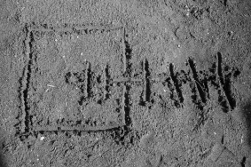
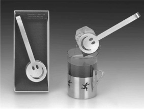

ÖNSÖZ
Dua Defterim adında bir kitap. Garip! Defter ama kitap! Defter yazısız olur; başkası doldursun diye. Bu baştan yazıyla doldurulmuş bir kitap. Yazısız çıkmalıydı aslında Dua Defterim; herkes o beyaz boşlukta kendisini görsün/bulsun diye.
Bir sayfanın karşısına elinde bir kalemle geçen herkes o aklığın dipsiz boşluğunda aklının titreyişlerini görür. Dolduramayacağı boşluklar görmek, ürkütür insanı. Uçurum gibi gelir sayfanın boşluğu; sözlerini yükseklik korkusuyla ileri atmaktan korkar.
Korkmana gerek yok; ben doldurdum boşlukları. Yine de seni sana bırakmaktır niyetim. Alıştıra alıştıra söyleyeyim: Dua Defterim sensin aslında. İç/ten arzularının, ip/ince özlemlerinin, mecalsiz yakarışlarının, sözsüz fısıltılarının, hesapsız nefeslerinin, isimsiz sızılarının karası düşüyor avuçlarına. Dudaklarının birbirine dokunuşu hüma kuşları uçuruyor rahmet dergâhına. Nefesine “ah!”lar dolanması serin güller açtırıyor pişmanlık sahrasının yanık yüzünde. Sızım sızım sızlayan sızılarının söz kuşağını kuşanması sonsuz yakınlığın kucağına taşı(rı)yor seni.
Dua, toprağın toprağa imzasıdır. Topraktan gelip de toprağa dönmeden önce, gökçe okunur bir yazı olman içindir. Kasvetli ağırlığını gök çekimine kaptırasın diyedir. Gelip geçen, ezilip dağılan varlığını kutsîler pazarına sunasın diyedir. Eriyen kalıbını canhıraş feryatlarla sonsuzca bir hitabın kalbine atman içindir. Suskun ve soğuk toprağın sıcacık sözü olasın diyedir. Tatlı yakarışlara dudağını değdirmen içindir.
Söylüyor değilsin sadece, söz kesiliyorsun da. Yazıyor değilsin sadece; yazılıyorsun da. Söz kesilip yaz(ıl)dığın o defteri boynuna sarıyorsun gün be gün. Söylediklerin, eylediklerin, niyetlendiklerin kara bir kefen oluyor savunmasız çıplaklığına. Sözlerinle kefenleniyorsun. Dualarına sarılıyorsun. Defterini yazıyorsun.
‘Dua Defterimiz’ hep açık kalsın.
Not:
Dua Defterim’in yeni baskısında yeni notlar var. Bu notlar, Dua Defterim’i kitap olarak değil defter olarak gören Ali Hakkoymaz’ın yazdıkları… Bazı bölümlerin sonunda özel bir okuyucunun bir kitaba tepkisini yeni notlar olarak kitaba eklemeyi düşündük.
Dua: Duanın Duası
Dua ediyor olabilmek, O’na muhatap olmayı içerir. Duanın karşılığını umuyor olmak, O’nu muhatap olarak bulmuş olmayı gerektirir. Dua edenlerden olmasaydık, dua ediyor olmak için bile dua ediyor olamazdık. Karanlıkta kalıp da karanlıkta olduğunu fark etmeyen bir yitiklik olurdu böylesi. Dua ediyor olabilmek, duanın karşılığını umuyor olmak, çok önemli ve öncelikli bir duanın kabul edilmiş halidir. Dua edemeyen, dua edemediğinin farkında değildir; dua etmek için dua etmek gerektiğini bile bilemez. Dua edemeyen, dua edememekle neyi kaybettiğinin farkında değildir; bir şeyi kaybettiğini bilmeyen ise aramaz, aramadıkça bulamaz, bulsa bile eline almaz. Öyleyse, dua edebiliyor olmakla, nasıl derin bir kuyudan çıkarıldığımızı görelim. Dua eden bilmeli ki, dua ediyor olmakla, aramayı bile bilmediği bir kaybını bulmuştur, eksikliğini bile çekemeyecek kadar eksiği olan eksiğini tamamlamıştır. Birileri, hakkında dua etmiş olmalı ki, dua edebiliyor.
Dilim Dilim Tövbe
“Kim kötü bir iş işler, nefsine zulmeder de, sonra/gecikerek tövbe ederse Allah’ı Gafûr ve Rahîm olarak bulur.” (Nisa, 110)
Aziz Mahmud Hüdâyî, bu ayeti yorumlarken, tövbenin pek dikkat etmediğimiz bir inceliğine dikkat çekiyor. İnsan kötü işi bedeniyle yapar, eliyle gerçekleştirir, açık bir eylem koyar ortaya. Tövbe ise dille yapılır, hatta dile gelmeden, üstü kapalı yapıldığı çoktur. Hatta böylesi daha da makbûldur. Hüdâyî Hazretleri, işte bu farkı hatırlatıyor: Fiilen yapılan isyanın sözle yapılan itaatle affedilmesindeki lûtfu gözler önüne seriyor. Bedenimizle yaptığımız günah, dilimizle yaptığımız, hatta dilsiz de yaptığımız tövbe ile bağışlanıyor.
Secde: Rızkın En Yükseği
“İnsanları ve cinleri bana ibadet etsinler diye yarattım; beni doyursun diye değil...” (Zariyat, 56-57)
Kulluk, Rab tarafından rızıklandığını bilmekle başlar. İnsanın secdesi tevekkül seccadesinde gerçekleşir. Kul alnını yere değdirdiğinde, Rabbinden başka kimseye muhtaç olmadığını kabullenir. Secde ile sadece kafasını değil varlığını da toprağa indirir. Rabbinin kendisine verdiğinden şüphesi olanın secdesi tam değildir; alnı yerde olduğu halde aklı yukarıda kalmıştır. Hani “Burnu havada!” denir ya… “Yalnız Sana kulluk edelim [diye] yalnız Senden yardım dileriz!” dedirttiğine göre Rabbimiz, kulluğumuzu O’na lûtufmuş gibi görmek yerine, O’nun bize lûtfu olarak bilmeliyiz.
Yaşamak: “Bugün”ü Güzel Bir “Dün” Eyleme Duası
Bir “Âlî” söz: “Bugün amel var, hesap yok. Yarın hesap var, amel yok.”
Bu sözü, bir de “Hiç ölmeyecekmişsin gibi dünyaya, yarın ölecekmişsin gibi ahirete çalış” sözüyle birlikte düşününce, tatlı bir espri çıkıyor. Bugün hiç ölmeyeceksin, yarın olduğunda ise “bugün” için ölmüş olacaksın; “dün”de sadece hatıran kalacak, bir ölü gibi. Yarın olduğunda, “bugün” de senin için ölmüş olacak. Ne bir şey ekleyebileceksin “dün”üne ne bir şey eksiltebileceksin “dün”ünden. “Dün” sana ne bir güneş getirecek ne de bir akşam sunabilecek. Oysa “bugün”ün hiç ölmeyenisin. “Bugün”ün içinde ayağa kalkmış, şevkle yürüyen, elinden geleni yapabilen bir “diri”sin. Bugün de canlı, sen de… “Bugün”ün içinde hiç ölmeyecek gibi ebedî meyveler devşirebilirsen, yarın geldiğinde “dün”ün huzurlu ölmüşü olabilirsin, “dün”ün ölümünü huzurla karşılayabilirsin.
“Allah’ım, bugünümü hiç ölmeyeceğim ebedî meyvelerle uzat ki, yarın ölecek dünüm sonsuzlaşsın, yarına erişemeyen ömrüm ebedîleşsin.”
Ah, Günah!
“Bağışlama, menekşenin kendini ezen topuğa anında bulaşan güzel kokusudur.”
Cüneyt kardeşim göndermiş... Rabbimizi “Ben günah işlerim, O utanır!” diye tarif eden Şirazlı Sadi’nin sözüyle yan yana yahut alt alta koy bakalım, neler düşüneceksin? Kendisi için değil kulunun iyiliği için istediği şeyleri, üstelik Kendi verdiği rızıkla, Kendi verdiği hayatla, Kendi verdiği zamanda ve mekânda ezip geçen kuluna mağfiret sözü veriyor Rabbimiz. İşlediği günahı itiraf eden, hatasını kabul eden, isyanları için özür dileyen kulunu bağışlamamaktan hayâ ettiğini belirten Rabbimiz O. Daha iyisi var mı?
Dua Çekimi
İlle de beddua etmek geliyorsa içinden şöylesi de var:
Çektirsin Allah sana, çok çektirsin…
Öyle bol zikirler çektirsin ki elinde tesbihler eskisin.
Çektirsin Allah, çok çektirsin…
Öyle kimselere çektirsin ki huyunu; salihlere, velilere, şehitlere benzeyesin.
Çektirsin Allah sana, çok çektirsin...
Öyle ulvi şeylere hasret çektirsin ki cümle hasretlerden vazgeçesin.
Çektirsin Allah sana, çok çektirsin...
Öyle güzel fotoğraflar çektirsin ki, bakanlar varlığın keskin ucunun kalplerine tefekkürle battığını hissetsin.
Çektirsin Allah sana, çok çektirsin...
Öyle güzel filmler çektirsin ki, seyredenler kendi onurlarını kendi elleriyle kuyuya ittiklerini ve dünya bezirganlarınca ucuza satıldıklarını fark etsin.
Sen Gafil Olma; Senden Gafil Değil O!
Engin Ardıç’tan okudum: Batı toplumu “guilt-oriented”; yani “suçluluk-eksenli” yaşar. Doğu toplumları ise “shame-oriented”; yani “utanma-eksenli” yaşar. Daha açıkçası şöyle: Suçluluk eksenli yaşayanların, bir hata ettiklerinde, bu hatanın acısını vicdanlarında hissetmeleri pişmanlıkları için yeterlidir. Ancak utanma eksenli olanların pişmanlığı, başkalarının bu hatayı bilmesine bağlıdır. Bu ikinci gruptakiler vicdanlarıyla da temasa geçmedikleri için, bazen, belki çoğu zaman, başkalarının bilmesi de pişmanlık duymalarına yetmez! Hata üstüne hata edip de, tövbe edemeyenlerin, özür dileme ihtiyacı hissetmeyenlerin de, benzer bir sınıflandırmaya tâbi tutulması mümkün müdür acaba? Ayıplanma korkusunun günah korkusundan ağır bastığı bir toplumda yaşıyorsanız, töreleri terörize ederek dinîleştirmek, hatta dinin yerine koymak mümkündür.
Bir de, sırf ayıptır diye helâli haram edenlere, artık ayıplanmıyor diye haramı helâl edenlere ne demeli? Bizi yoktan var eden, hiç kimseler adımızı anmazken adımızı anıp insan eyleyen, herkes unuttuğunda da bizi unutmayacak olan kerem sahibi Rabbimize “ayıp” ediyor olmayalım?
Günahla Saklanmak mı, Günahtan Saklanmak mı?
“Kendi günahını halktan saklamak için dua ettiğin kadar, kendini günahtan saklamak için de dua etmelisin.”
Ataullah İskenderi’den yorumlu alıntımdır. Şöyle diyor Hikem’ül Atâiyye’sinde: “Setr iki kısımdır. Birisi ma’siyetten setr, diğeri ma’siyette setr. Avam ister Hudâ’dan tâ ola isyanları mestur/Ki nâsa karşı haysiyetlerinden olmasınlar dûr/İbâd-ı hâss ise setr-i maâsiden diler ancak/Tecellî-yi nazardan onları dûr etmesin kim Hak. (Kastamonulu Ballıklızade Ahmed Mahir merhumun manzum tercümesine şükran borçluyum. Fakirullah Eğitim ve Hizmet Vakfı’ndan dostların gayretiyle yayınlanmış Hikem’ül Atâiyye/El-Muhkem fî Şerhi’l Hikem kitabını derhal edinmeli.)
Şöyle ki:
“Halkın gözünden düşmeyeyim diye günahını halktan saklamak için dua ettiğin kadar, Hakkın gözünden düşmeyeyim diye de kendini günahtan saklamak için dua et.”
Yorulduğun ‘Kader’sin
“Allah seni hayra yorsun!”
Uzunca bir söyleşi ve imza meşguliyetinin ardından gelen, “Hocam sizi yorduk!” gibi nazik bir yoruma karşı, aniden böyle bir dua çıktı ağzımdan. Sonra da “yormak” fiilinin tevriyeli anlamı üzerinde düşünmeye başladım. Her defasında açıklamak zorunda kaldığım iki anlamı var duanın... Birincisi, nasılsa bu hayatta koşturuyorsun, yoruluyorsun. Öyleyse, Rabbin seni öyle işlerde istihdam etsin ki hayır için yorsun, hayır için yorulmayı sana lûtfetsin. Şer için yorulmaktan seni, beni muhafaza eylesin. İkinci anlamı ise, Yusuf (as) kıssasının sonundaki duada saklıdır. Ve “İnsanlar uykudadır, ölünce uyanırlar” sözünce: (ki Hz. Ali [ra] efendimize de atfedilir, hadis diye de duyduğum olmuştur. Her iki halde de “sahih bir söz”dür elbet!) Yaşadığımız ömür tümüyle bir rüyadır, ölünce uyanacağımız bu ömrün hayra yorumlanması Rabbimizin affına, mağfiretine bağlıdır.
Dua Sarmalı
Cevşen-i Kebir’in 35. Hizbi’nde öyle bir güzellik saklı ki… “Sarmal dua” diyesim geliyor... Buradaki 10 cümlenin her biri bir önceki cümlenin içinden doğarak geliyor. Sanki her bir cümle birbirine çengelle geçmiş gibi. Ya da bir esmâyı bir başka esmânın burcunda güneş gibi doğarken görüyorsunuz. Allah Vâfî’dir ve vefasında pek kuvvetlidir; Allah Kavî’dir ve kuvvetinde de pek ulvîdir; ulvîyetinde de pek yakındır, yakınlığıyla pek lütufkârdır... Sanki esmanın tecellisi gül yaprakları gibi iç içe açılıyor, açıldıkça her kattaki tecelliden ayrı bir teselli kokusu alıyorsun. Şöyle ki:
Sen ahdine pek vefalısın ey Vâfî
Sen vefanda pek kuvvetlisin ey Kavî
Sen kuvvetinde pek ulvîsin ey Âlî
Sen ulvîyetinle birlikte pek yakınsın ey Karîb
Sen yakınlığınla pek lütufkârsın ey Latîf
Sen lütuflarınla pek şereflisin ey Şerîf
Sen şerefinle pek izzetlisin ey Aziz
Sen izzetinle pek mecîdsin ey Mecid
Sen mecdiyetinle pek hamdedilesin ey Hamîd
Gül’ün Adı
“Güle Güle!”
Pek duaya benzemiyor, değil mi? Bir de şöyle yazarsam: “Gül’e Gül’e [gidesin]”
Sevgili Hakan ve Serpil kardeşlerimin, bana kazandırdığı bu tatlı espri sayesinde, artık her “Güle Güle...” dediğime, “gülleri gül eyleyen, güllerin yüzünü güldüren En Sevgili’ye (asm) doğru gidesin, O’nun mübarek sünnetine doğru yürüyesin, O’nun şefaatli ve şefkatli iklimine yanaşasın” diye dua ediyorum.
“Peygamber’e Peygamber’e gidesin...”
Al Sana / l Dua!
Acaba şöylesi bir duaya ihtiyaç duyar mıyız?
Ey sanal âlemlerin de Rabbi olan Allah’ım,
Beni her daim güzele link eyle
Katından bana hayır download eyle
Hard-discimi bilinir bilinmez virüslerden muhafaza eyle
Tuşlarımı Senin rızan yolunda koşturan erler eyle
Ekranımı ak eyle
Boş söz ve yalan “spam”leri zihnimden ve e-mailimden uzak eyle!
“Ney’imiz Olur Dua?”
Dinle neyden ki hikâye etmede,Hep ayrılıktan şikâyet etmede.
Mevlânâ’nın mesel dünyasında, ney insanı temsil eder. İnsan da, tıpkı ney gibi, içinde nefes saklamaktadır. İnsanın her sözü, bir özleyişin ve bir ayrılığın ifadesidir. İnsanın iç çekişleri, aslından ayrı olmanın hüznünü, yuvadan uzak olmanın sancısını yansıtır. Dua, gurbette sıla sancısıdır.
Dua Mavisi
Sana ne desin deniz? Sen ki aşkın kıyılarında şarkılar söyledin. Heceleri tükendi denizin. Sen ki nice kumlar akıttın kalbinin odacıklarından. Sellerin hepsi boşa gitti. Sana ne versin deniz? Sen denizi al gözlerine. Avuçlarında topla köpükleri. Topla ki, dalga dalga göğe yükselsin dua denizi. Yükselsin ki, bin hediye düşsün kalbimize. Sen ellerinde büyüt denizleri. Sen gözlerinde ağırla suları. Bakışınla yıka gözlerimi. Dokunuşun bir Mesih gibi insin göğüme. Dua dua dökül avuçlarıma. Dökül ki, denizler yeniden söze gelsin… Söze gelsin dalgalar; göğe taşsın yağmur duası olasıya… Senin kıyılarına erişemez deniz ki, sana ne desin?
Yerden Göğe Yağmur
Diline değdiği anda göklere ağar söz... Dudağına değer değmez ötelerin muştusunu getirir söz. Nefesine karışır karışmaz kalbini sonsuza taşırır... Dua avucuna dokunur dokunmaz kelebek gibi bahara taşır tenini. Dua sözün sözden öte konuşmasıdır... Dua sözün kıblesi, kalbin haccıdır.
Dua, Asâ, Musa
Rabbimiz Musa Aleyhisselam’a sormuştu: “Elindeki nedir?” Musa Aleyhisselam ise, “Bu asâmdır” demişti, “Ona dayanırım, onunla hayvanlarıma yaprak silkelerim...” Ve sonra asâsı ile ilgili pek çok detay anlatmıştı. Pekâlâ, Musa Aleyhisselam da biliyordu ki, Rabbi elindekinin ne olduğunu bilir. Asânın dayanmaya yaradığını, hayvanlara yaprak silkmekte kullanıldığını, her şeyi bilen Rabbe ayrıca söylenmesi fazla gibi görünüyor... Sence de öyle değil mi? Sen sevdiğinin huzurunda olsan, lafı uzatmak istemez misin? Daha çok huzurda kalmak için yeni yeni konular bulmayı arzu etmez misin? Konuştuğunun ne olduğu önemli değildir ki. Önemli olan konuşmandır. Konuşmak seni huzurda tutacaktır...
Dua da böyledir işte. Kulun Rabbiyle söyleşmesidir. İster ayakkabımızın kaybolan bağcığı gibi sıradan bir şey için, ister ebedî hayat gibi en başta gelen hacetimiz için dua etmek, Rabbin huzurunda kalma vesilesidir. Mümin için duanın kabul olup olmasından önce, duada olmak gelmelidir... Çünkü dua, içeriği ne olursa olsun, sonucu nereye varırsa varsın, Sevgilinin huzurunda kalmaktır. O’na konuşmak, O’nunla birlikte olmak, O’nun sana istediğini vermesinden daha büyük bir kârdır.
Sıla Hatırı / na
“... Açılan ellerimde, çırpınan yüreğim var. Temkine gelmeyen, ten kafesinde çırpındıkça kendini daha çok yaralayan deli yüreğim. Bağışla onu.”
Muhterem Ahmet Selim’in duası... İlk okuduğum andan beri kalbimde kök saldı. Bana göre “Rabbim sadrımı şerh eyle, göğsümü genişlet” sırrının tercümanı. İnsanın duanın eşiğinde boyun bükmesi, avuçlarına yüreğinin çırpınışlarını dökmesi, şimdi olduğu yerin olması gerektiği yerden çok daha dar olduğunu fark etmesine bağlı. “Göğsümü genişlet” diye dua etmemizi öğreten Rabbimiz, elbette ki göğsümüzün genişleyemeyeceği, hayallerimizin kanatlarını alabildiğine açamayacağı, kalbimizin tam doymayacağı bir yerde, yani dünyada, yani “aşağı/yer”de olduğumuzu bildiriyor, bildiğini bilmemizi istiyor. Gurbeti gurbet bilmek sıla hatırınadır.
Şehr / ince
Yağmurunu çok sevdiğim, yağmuruyla daha da çok sevindiğim İstanbul’uma “Bugün hava berbat” diyerek hakaret edenleri de sevmeye çalıştığım yağmurlu bir İstanbul akşamında, aklıma düştü:
“Ey Rabbim, Senden kırmızıda duracak kadar haddini bilen, yeşilde bir kaç tonluk araçları bir parmak hareketiyle durdurabilecek kadar hakkını bilen bir şehir istiyorum.”
Not: “Kul hakkı” duyarlılığı en sahici, en kalıcı estetik kaynağıdır aslında. Kaliteli toplumun dokusu kırmızı ışık gibi sokak detaylarındaki kul hakkı nezaketiyle örülüyor olmalı. Nedense, diğerlerini kırmızı ışıkta geçerken seyredip kendine yeşil ışığı ayıran benim gibi yayaların az sonra yeşil ışıkta geçme haklarını da kaybedeceğini sanıyorum.
Bu, Gündür; Karartma!
Bir “Âlî” söz: “Ey benim gibi nefis taşıyan dostlarım! Dikkat edin! Dünya arkasını dönmüş gidiyor, ahiret yüzünü çevirmiş bize doğru geliyor. İkisinin de taliplileri var. Siz ahirete talip olun. Bir çocuk gibi dünyanın kucağına oturmayın. Unutmayın, bugün amel var, hesap yok. Yarın da hesap var, amel yok.”
Düşündüm ki, yarın geldiğinde “dün” eylediğim her “bugün”üm artık ahirete aittir, hatta “ahiret”tir. Çünkü ömrüm tüm “bugün”lerimi “dün” ettiğimde biter. Rabbim mağfiret etmezse, “dün”e ekleyeceğim bir şey yok, “dün”den bir şey eksiltemem de. “Dün” için hesap vereceğim ama ona “bugün”den kıl kadar bile bir amel katamam. Henüz “bugün” olan “bugün” ise amel katabileceğim tek günüm; onu da “dün” edinceye kadar hesap yok bana. Öyleyse:
“Ey Rabbim, bana “bugün”ümü “dün” olduğunda amel ekleme ihtiyacı duymayacak kadar verimli yaşat ki, “dün” eylediğim “bugün”lerin hesabını kolay vereyim. Ameli olan-hesabı olmayan “bugün”lerimi, ameli olmayan-hesabı olan “dün”leri tamam eylemek üzere yaşat beni.”
Terk Ettiğince Sevince…
“Terk ettiklerini terk ettiğine Allah seni sevindirsin.”
Hayatın özünü yakalayan bir yakarış bu. Çünkü her an bir tercihte bulunuyoruz. Ya sağa ya sola dönüyoruz. Alışverişteyiz; bir şeyi tercih ediyor, uğruna paramızı, emeğimizi terk ediyoruz. Bir tercih bize bin terk edişi yaşatıyor. Rabbimizin rızası için tercih ettiklerimiz ne çok terki gerektiriyor. Bir helâl için bin haramdan yüz çeviriyoruz. Söz gelimi, bir kadını kendimize helâl ederken, diğerlerini terk ediyoruz. Bir erkeği kendimize eş seçerken, başka bütün erkeklerden yüz çeviriyoruz. Eşlerin birbirleri için böylesi sözel ve fiilî dualarda bulunması gerekir. Yani, kendimizi, uğrunda terk edilenleri terk etmeye değer bir tercih haline getirmeliyiz. Eşine, seni tercih ederken terk ettiklerini terk ettiğine sevindirme borçlusun. Bir ömür boyu…
Ateşli Dua
İçine şefkat ateşi düşsün.
Yaksın, yaksın, yaksın kalbini.
Kor düşsün odacıklarına.
Unutup küllendirdiğin acılarının hepsi alev alsın.
Göğsünün yangınından bin yetimin yüzüne sıcaklık yayılsın.
Ateşinin yalımından kimsesizlerin üşümüş gönlüne kıvılcımlar sıçrasın.
Gözlerinin sımsıcak bakışıyla ayrılık duvarları yıkılsın, ayrıcalık katları çöksün.
İçinin şefkati zalimlerin kara yüreğine ak korlar düşürsün.
İtfaiye yetişemesin, yolda kalsın, Roma’yı yakanlar da yansın.
Unutkan şehirler, umarsız ülkeler, bencil kasabalar, mağrur başkentler haritadan silinsin.
:Var, öyle şehirler var. Unutmuş toprakla bağını. Kızgın asfaltın, beton yığınlarının tanıdığı isen, unutmuşsan yağmur sonrası toprak kokusunu… Fırsatın olursa, toprakla yeniden tanış… Toprağa yeni baştan alış... Yakında yabancılık çekmemek için.
Dile “Değer” Fatiha
Bismillahirrahmânirrahîm
Hamd O Allah’ın
[ki O] Rabbi[dir] âlemlerin.
[ki O] Rahman ve Rahim
[ki O] Maliki[dir] Din Gününün.
Sana ibadet ederiz yalnız.
Senden inayet dileriz yalnız.
Hidayet eyle bizi ‘müstakîm yol’a.
Üzerlerine nimet indirdiklerinin yoluna.
Gazaba uğramışların [yoluna] değil, dalâlete sapanların [yoluna da] değil.
– Âmîn
Ömrümü sadece Fâtiha’nın sırlarını açmaya, herkese her dilden Fâtiha anlatmaya ayırmak için duacıyım. Fâtiha, dilimize değen en güzel duadır. Duayı kabul edecek olan Zât’ın dilimize dua vermesi, bize yakarış temrinleri yaptırması, O’nun o duaları çoktan kabul etmeye hazır olduğunu gösteriyor, değil mi? Dua ile duanın kabulü arasında sadece o duanın dilimize değmesi bahanesi var. Adı üzerinde “açılış”tır Fatiha; varlığın yüzünü Var eden’e açar, bize ötelerle “ağız birliği” ettirir. Bize verileceklerin hepsi Fâtiha’da saklıdır. Tek Fâtiha ile istediklerimiz bize verilse yeter aslında. Yokluğun dehşetinden, unutulmuşluğun dipsiz kuyusundan alıp bize kimsenin yapamayacağı iyiliği yapan Rabbimiz, Fatiha ile kendimiz için neyi istemenin hayırlı olduğunu öğretir bize ve onları kendisinden istetir. Vermek istemeseydi, ısrarla istememizi ister miydi?
:Düşmemek için… İstemek düşer bize.
Varsın (ya) Yeter
Varlığa ben seninle agâhımVar olan sensin ancak Allah’ım
Midhat Baharî’ye aittir diye kaydettiğim bu dizeler, “emr-i kün feyekûn”e malik olan Hakk’ın “Ol!” sözünün hatırına var olan emanet varlığımızın O’nun sadece varlığını ol/umlamakta bile ne kadar yoktan yana durduğunu özetliyor.
“Var” demekten utandığımız O. Niye ki? “Var!” diyebilen dudakları var eden O.
“Var” demekte geç kaldığımız O. Neden ki? “Var!” diyen varları yoktan var eden O.
“Var” demekle varlığına bir şey katamadığımız O. Nasıl ki? “Var!” sözünü de var eden O.
Bir’dir Bir
Biri iste; başkaları istenmeye değmiyor.
Biri çağır; başkaları imdada gelmiyor.
Biri talep et; başkaları lâyık değiller.
Biri gör; başkaları her vakit görünmüyorlar, zeval perdesinde saklanıyorlar.
Biri bil; marifetine yardım etmeyen başka bilmekler faydasızdır.
Biri söyle; O’na ait olmayan sözler malâyani sayılabilir.
Mevlânâ Camî’nin bu sözleri öylesine “bir”icik ki, insanın dilini, damağını, sözünü, nefesini bir bir Bir’e yapıştırıyor; gözünü, yüzünü bir/den Bir’e çeviriyor; ruhunu, kalbini, hasretlerini, emellerini hep birlikte Bir’le kucaklaştırıyor.
Bir’den Bir’e oluyor her iş. Öbürü için değil, O biri için. Bir için bir şeyler yap. Seni birden bire, göz açıp kapayıncaya kadar bile Bir’den ayırmak isteyene karşı uyanık ol.
Acz
Hayat bir boş rüyaymış
Geçen ibadetler özürlü
Eski günahlar dipdiri
Seçkin bir kimse değilim
İsmimin baş harflerinde kimliğim
Bağışlanmamı dilerim.
Ahmet Cahit Zarifoğlu
Zarif’çe bir hayattan ince ince süzülen, ebediyen gök kubbede çınlamayı hak eden, yazanının sırf bu zarif inceliği yazmak için bu dünyaya gelmiş olmasına değen, insana “Niye benim adım Ahmet Cahit Zarifoğlu değil ki?” dedirten bir dua… İsminin ve soy isminin ACZ diye kısaltılabilmesi şüphesiz ki bir tevafuk. Ama bu tevafuka muvafık yaşamak da ayrı bir incelik. Bir dikkatçik hediyemiz olsun dedik!
:Hayat zaten bir rüya. Bir de eğer, şayet, hani, ne bileyim, “yaşadım rüya!” diyeceksek… Diyecek ne kalır o zaman? Bir daha uyanmak adına!
Korkuyorum; Kırılırsın Diye
“Allah’ım; bize korkundan öyle bir pay ayır ki, bu, Sana karşı işlenecek günahlarla bizim aramızda bir engel olsun. Allah’ım; bize itaatinden öyle bir nasib ver ki, o bizi cennete ulaştırsın. Allah’ım; bize yakîninden öyle bir hisse lûtfet ki dünyevî musibetlere tahammülümüz kolaylaşsın.”
Efendimizin (asm) bir topluluğa veda ederken böyle dua etmesi ne kadar anlamlı! Rabbimizden “korku” istiyoruz ki, o korku O’na karşı günah işlemekten çekindirsin bizi. O korku bir muhabbet korkusudur aslında; sevdiğini üzmeme, sevenini kırmama korkusu. Böylesine bir korku payı günahtan ve isyandan (ite kaka değil, seve seve) uzak kalmaya razı eder bizi. Rabbimize itaatten pay istiyoruz ki, O’na itaatimiz cennete ulaşma aracımız değildir sadece; cennetin tâ kendisidir. O’nun sevmesinden kaynaklanan bir korku nasibi, O’na severek itaati gerektirir ki, sevindiğimiz yer, sevildiğimizi bildiğimiz yer cennetimizdir. Yakîn de istiyoruz O’ndan… O’na öylesine yakın olmalıyız ki, başımıza ne gelirse O’nun hikmetiyle ve rahmetiyle geldiğini, bize isabet eden musibetlerin O’nun bize uyarısı olduğunu, eşya ile boğuşmak yerine her şeyin O’nun emrinde olduğunu bilme rahatlığı ile sabredelim. Her işinde O’nunla olan cennette yaşıyordur zaten.
:Zaten kırık her yanım; kavga benim neyime…
Dua Düş / ünce
yağmura, nisana ve yaşıma aldanıp/uçurumları kıyı sanarak/ve dağlar erişilmeyince acı verir/sözünü unutarak/kaf dağına gitmek istedim / ırmak inadıyla yürüdüm uzaklara/bir derviş olup yürüdüm uzaklara / yanıldı denektaşım geriye döndüm/Kutsal Sözler Panayırı’na sığınıp/ipeksi bir sessizliğe büründüm: / bir hayat, mahcup ve duru/Tanrım, gülleri/ve sessiz harfleri koru.
İbrahim Tenekeci’nin “Düş ve Dua” adlı şiiri, kalbimizin kuytularında sessiz harflerin bile korunması için seslendirilmeyi bekleyen ne çok sessizlik barındırdığımızı haber veriyor. Her şair unuttuğumuz yanlarımızın hatırlatıcısı, susturduğumuz çığlıklarımızın sözcüsüdür. Sessiz harflerin korunmasını Rabbimize muhatap olma vesilesi bilmek ne çok sestir; O’nu sessiz harflerin de koruyucusu olarak tanımak ne büyük zenginliktir!
Hakkın Hakkı
Allah’ım; bize hakkı hak olarak göster ve bizi ona uymakla rızıklandır.Allah’ım; bize batılı batıl olarak göster ve bizi ondan kaçınmakla rızıklandır.
Said Nursî’nin İşarâtü’l İ’câz’ından... “Rızık” deyince sadece “yenilecek içilecek” şeyleri anlamaya şartlanmışız ya... Ezberimizi bozuyor. Eğer bu duanın ucunda saklı rızıklardan yoksun kalırsak, yediklerimizin tadı kaçar, içtiklerimizin lezzeti bozulur...
İm(k)ansızlık Sızısı
Ya olmasaydın, Tanrım, / Ya olmasaydın! / Yürüdüğüm yollar tükendiğinde / Dostlar yabancıya, / Sıla gurbete benzediğinde... / Kırbamda su, heybemde azık / Ve türkülerimde... / Türkülerimde söz bittiğinde; insanın kıt / Gecenin yıldızsız / İfritlerinse, daim peşimde / (Hem uyanıkken hem de düşümde) / Olduğu zaman, / Kimin kapısını omuzlayarak / Hoyratça açar da, kimin / Aynalarını parçalayarak / Canımı içeri atardım, Tanrım, / Sen olmasaydın?
Cahit KOYTAK, “münzevinin aynaları”na yüzümüzü tutarak, zifiri karanlığını, korkunç azabını hissetmekten uzak düştüğümüz, uzak düştüğümüz için de iman sahibi kılınarak nereden nereye getirildiğimizi fark edemediğimiz “im(k)ansızlık karanlığı”yla göz göze getiriyor bizleri.
Dua İçin / de Dua
Duanın en güzel ve en latif meyvesi, en leziz ve en hazır neticesi şudur ki: Dua eden adam, bilir ve dua ile bildirir ki; birisi var, onun sesini dinler, derdine derman yetiştirir, ona merhamet eder, onun eli her şeye yetişir. Ve bu boş, hâlî dünyada o yalnız değil; belki bir Kerim zât var; ona bakar, ünsiyet verir. Onun hadsiz ihtiyacatını yerine getirebilir ve hadsiz düşmanlarını defedebilir bir zâtın huzurunda kendini tasavvur ederek, bir ferah ve sürur duyup, dünya kadar ağır bir yükü üzerinden atıp, “Elhamdülillahi Rabb-il âlemîn” der.
Bediüzzaman’ın bu ifadeleri, duayı Allah’la bir pazarlıkmış gibi sunan, “şu duayı şu kadar okursan, şunun olur!” diyerek insanları duanın inceliğinden uzaklaştıran, duanın sonunda istediği şey -hemen- gelmediğinde ümitsizliğe düşüren derme çatma dua kitaplarının ıskaladığı kutsî lezzeti ne kadar nezaketle tarif ediyor. Duada istediğimiz şeyden çok, isteyişimize, isteyebilir oluşumuza, istememizi isteyen Rabbimizin “kimimiz” olduğuna odaklanmalıyız. İşte o zaman istediğimiz, hemen ve istediğimiz şekilde verilmezse de, isteyişimiz “makbul” olur; dua ediyor olmakla “ebedî yakınlık” meyveleri tadarız.
Acil “Âmin!”
Rabbimiz, bize bu dünyada öyle güzellikler göster ki, ahirete bir şey kalmadı sanalım. Ama ahirette göstereceğin güzellikler dünyada gösterdiklerinin zerresi bile olmasın.
İnsanın hemen “amin!” diyesi geliyor değil mi?
:Diyesi geliyor derken yani hemen insan oraları görmek istiyor diye anladım. Bir arkadaşım vardı; öldü. Ama hâlâ var. Var çünkü ölüm ayırıcı değil. Derdi ki, öbür tarafı merak ediyorum; yani burada kalmak da pek istemiyorum gibi. Gitti. Bu güzellikler bir yerden yansıyor elbet. Çığlık çığlığa bir davet aslında meselâ bahar çiçekdanlığı cennete. Burada solan çiçekler var; orada her an olan. Deminki duaya sonsuz âmin…
Daha Yok mu?
“Allah’ım ilmimizi, imanımızı, yakînimizi, tevekkülümüzü, teslimiyetimizi, tefvizimizi, marifetimizi, muhabbetimizi, şevkimizi ve Sana iştiyakımızı artır; bizi iffet, ismet, fetânet, hikmet, sadâkat, ihlâs ve vefâ burçlarına ulaştır; öğrenme, akılda tutma ve hatırlama kuvvelerimizi takviye buyur.”
Her gün ihtiyaç duyduğumuz, bir sonraki gün daha çok ihtiyaç duyduğumuzu daha da hissedeceğimiz, okudukça okuyasımız gelecek, hakkımızda kabulü için içtikçe susayanlar gibi susayacağımız bu zarif dua ile ilgili yorumunda M. Fethullah Gülen öylesine şevk verici sözler söylüyor ki:
“...asla kendinize, durduğunuz yere ve ortaya koyduğunuz amellerinize güvenmemelisiniz, akıbetinizden asla emin olmamalısınız. İşte bu sebepledir ki, günde yüz defa “Allah’ım ilmimizi, imanımızı, yakînimizi, tevekkülümüzü, teslimiyetimizi, tefvizimizi, marifetimizi, muhabbetimizi, şevkimizi ve Sana iştiyakımızı artır; bizi iffet, ismet, fetânet, hikmet, sadâkat, ihlâs ve vefâ burçlarına ulaştır; öğrenme, akılda tutma ve hatırlama kuvvelerimizi takviye buyur” diye dua etseniz, ben size “Keşke bunu ikiye katlasanız!” derim. Ertesi gün bu yakarışınızı ikiye katlamış olarak yanıma gelseniz ve arz-ı halde bulunsanız, yine hiç tereddüt etmeden “Keşke, bir kat daha artırsanız!” tavsiyesinde bulunurum. Çünkü Cenâb-ı Allah’a bu istirhamlarla teveccüh etmenin çok önemli olduğuna inanıyorum; dahası bu mevzuda O’na dayanmayanlara hiç kimsenin teminat verebileceğini sanmıyorum. Bu talebi ne kadar çok tekrar ederseniz edin, yine de yakarışınızı az bulmalı ve bu mevzuda ‘Hel min mezid? - Daha yok mu?’ ufkunda dolaşmalısınız...”
Ağır Yük
Eli boş varılmaz varılan yereBoş gelmedim ya Râb, ben suç getirdimDağlar çekemezken o ağır yüküİki kat sırtımda pek güç getirdim
Mesnevî şârihi, şair Tahir-ül Mevlevî’nin mezar taşına yazılmasını vasiyet ettiği sözler... Ömrümü böyle bir mezar taşının altında yatmaya razı olacak mahcubiyetle geçirmeye razı mıyım?
“İğne Duası”
Genç bir dostum (Furkan) takvimden benim doğum günüme denk gelen yaprağı koparıp saklamış. Kâğıtta tam bana göre olabileceğini ima ettiği bir söz yazılıydı. İlmiyle amel etmeyenleri iğneye benzetiyordu sözün sahibi İmam Gazalî: “Herkesi giydirir ama kendisi hep çıplak kalır.” Bundan böyle iğne gibi olmamak için de dua etmeliyim ve dahi pek iğne’li bu ince uyarıyı kendime batırmalıyım...
Dondurma Duayı!
“Turfanda meyve yerken edilecek dua...” “Kapıdan çıkarken okunacak dua..” “Yeni bir elbise giyerken okunacak dua...”
Özellikle, Efendimizin (asm) dilinden öğrendiğimiz duaları böylesi ifadelerle takdim etmenin dua hakkında ve duayı dillendiren Efendimizin (asm) yaşayışı hakkında bir anlam kaymasına neden olabileceğini yeni fark ettim. Niye mi? Efendimiz (asm) sabah evinden çıkarken şöyle bir dua etmiştir meselâ: “Allah’ım, beni bugün zulmetmekten ve zulmedilmekten, cahillik etmekten ve cahillik edilmekten, saptırmaktan ve saptırılmaktan koru!” Bu metni alıp deep-freeze’e koyarcasına dondurduktan sonra, “evden çıkarken edilecek dua” diye adeta reçetelendirdiğimizde, mümin olarak yaşamayı “nerede ne yapılacağını, hangi durumda ne söylenileceğini” ezberlediğimiz kuru bir “know-how”lar yönergesine indirgiyoruz. Sanıyor muyuz ki, Efendimiz (asm) böyle bir liste yaptı da; sırası ve yeri geldiğinde şöyle dua etmeliyim diye listeye baktı ya da ezberinden söyleyiverdi? Her an Rabbine muhatap olan, O’nun huzurunda olmanın heyecanını kıpır kıpır yaşayan Efendimiz (asm) o anda, o mekanda yaşadığı akışkan tefekkürüyle diline değdirdi o duaları.
Bizim sonradan kategorize ederek, ezbere döktüğümüz, yönergeler gibi okuduğumuz ama muhtemelen hissetmeden ve yaşamadan, yerine getirilmesi gereken bir formalite kuruluğunda okuduğumuz o dualar o andaki, o mekandaki yaşama heyecanının, kulluk aşkının ateşli kıvılcımları oldu. Eğer bir kardeşimiz elimize yukarıdaki gibi “sabah evden çıkarken okunacak dua” diye bir metin tutuşturmuşsa, o yaşanmışlık an’ına gidelim, o metnin içinde saklı tefekkürü yeniden yaşamaya çalışalım ve diyelim ki: “Demek ki, Efendimiz (asm) her sabah evden çıkarken, o günün içinde yaşanabilecek altı temel sorun görmüş ve bizim de görmemizi istemiş: Zulmedebilirim, zulme uğrayabilirim, cahillik edebilirim, cahillikle karşılaşabilirim, sapabilirim, saptırabilirim. Öyleyse, bugün evimden çıkarken, ilk adımlarımı atarken, zulmetmeme inceliğini, zulme uğrayacak olursam direnme kararlılığını, cahillik etmeme hassasiyetini, bana cahilce muhatap olunursa aynıyla karşılık vermeme olgunluğunu, sapabileceğimi bilerek sözlerimi, gözlerimi ve ellerimi dalaletten uzak tutma ihtiyatını, bilerek ya da bilmeyerek saptırılabileceğimin de farkında olarak doğruda kalma ihtimamını kuşanmalıyım.” Eğer bunu başarabilirsek, duayı ezberlemek yerine, içmeye başlarız. Dahası, nebevî tefekkürün nabzını göğsümüzde kıpır kıpır yaşar, Allah’ı görür gibi yaşamanın sıcacık nefesini nefesimize dolarız. Böylece duayı da ‘derin dondurucu’dan çıkarırız.
Seccadenin Adresi Olsaydı...
Seccade, içimizde Rabbimizi en çok sevenin en çok sevdiği yerdir. Seccade, içimizde Rabbimizce en çok sevilenin Rabbimizce en çok sevildiği yerdir. Seccade, içimizde bizi en çok seven En Sevgili’nin (asm) bizi görmekle en çok sevindiği yerdir.
O’nun (asm) gibi sevmek için, O’nun (asm) gibi sevilmek için, O’nu (asm) sevindirmek için seve seve seccadeye koşmalı değil miyiz?
İstemezsen Düşersin
Allah’ım, bugün istediğimizi sonra da istemeyi nasip et.
Giderek soğuyan aşklar için, gün geçtikçe kağşayan evlilikler için, eskidikçe sığlaşan dostluklar için, zaman içinde şevki kaybedilen işler için yapılası bir dua. “Şimdi istediğimizi sonra da istemeyi, hem de şimdi istediğimiz kadar aşkla istemeyi, şimdi istediğimiz gibi istedikçe istemeyi ver bize.”
Ay Dua!
[Ya Rab,] bu çağın karanlığında her ıstıraplı kalbe/Ay’ı bile mahcup eden bir sevda ver.
Doğu’nun lirik şairi, Mevlânâ nefesli Muhammed İkbal, Şems-i Ezelî’nin nurundan mahrum kalan, geceyi gündüz sanan, sabaha dair umudunu kaybeden, dertsizlik derdiyle kavrulan insanlar için böyle dua ediyor. “Ay’ı bile mahcup eden bir sevda” ne kadar aydınlıktır kim bilir... O sevda, ancak ay’ı bile bölen parmakların Sahibinden (asm) gelir bize...
Hıç/kırık
Ne çok sessizdir deniz ve ne çok söz söyler! Derinleştikçe daha çok hayatı heceler ama daha da suskunlaşır. Dibine vardıkça karanlıklar çoğalır göğsünde ama söyleyecekleri artar. İnsan mavi tebessümlerinin ötesinde, parıltılı sözlerinin ardında, deniz gibi dile gelmez, söze dökülmez, itiraf edilemez, istemesi bile bilinmez, ciddiye alınmaz, dinlemeye değmez suskunluklar saklar. Zatını “insanın kalbi ile kendisi arasında” diye tarif eden Rabbimiz ancak bizi anlayabilir. Dualarımızın suskun hıçkırıkları, müphem sızıları ancak O’nun işitmesinin sonsuz yumuşaklığında cevap bulur.
Öbürü - O Biri
Ömürler geçti, sen yoksun, gel ey bir tanecik Ma’bud,Gel ey bir tanecik Gâib, gel ey bir tanecik Mevcûd!Ya sıyrılsın şu vahdetgâhı vahşetzâr eden hicran,Ya bir nefhanla serpilsin bu hâsir kalbe itminan.
Merhum Mehmed Akif’in bu can yakıcı yakarışının hicranın ateşinde piştiği öyle belli ki... Canımızın yanması için yanıp tutuşan bir can taşımamız gerek. Canımız yanarsa, dua eder, yakarır, yöneliriz. Ne zaman bir yoksunlukla canımız yanarsa, bilelim ki sınanıyoruz. Sınav: O’na mı kaçacağız, yoksa O’ndan mı kaçacağız?
:Öbürlerinden vazgeçmedikçe, O birine nasıl varılır ki!
Şiirin Şuuru
Âkif’in yakarışındaki tefekkür damarına dikkat: Abd olunacak Ma’bud “bir tânecik”tir. Kulluğumuzu başkalarının merhametsiz ve muhabbetsiz yüzlerine yönlendirmişsek, “sen yoksun” demelere denk gelen bir “vahşet”e düşeriz. Bulduklarımızdan medet umuyor, gördüklerimizle oyalanıyorsak, bulunmaya değer ve görülmeye lâyık “bir tanecik” Gaib’i aramıyoruz demektir. Vicdanımız, adı üzerinde, [ki vicdan, “bulmak” anlamındaki “vecede” kökünden gelir] bunca hicranın çölünde, bunca yitirilmişlik kuyusunda “bir tanecik” Mevcud’u bulmuyorsa, hasâret içindeyiz demektir. “Bir tanecik” Gaib’in sınırlarında beklettiğimiz vicdanımız “bir tanecik” Mevcûd’u bulmaya yetmemişse, çoklara abd olacak “bir tanecik” Ma’bud’un uzağına düşmüşüz demektir. Her şeyin “bir tanecik”e yöneldiği yer “vahdetgâh”tır; ruhun ve kalbin dinlendiği, özlemlerin ve emellerin doyduğu mekân burasıdır. Yoksa kendimize “vahşetgâh” eyleriz bu âlemi ki, kayıplara uğramış “hasîr bir kalb”in itminansız çırpınışlarıyla göğsümüz daralır da daralır.
Taştan Taşa / n
Özlemekten yorulmuşum kapında durdur beniUcu sana dek ulaşan bir zincire vur beniBeni çöllerden sorma ki, sonra Mecnun yerinirAşksızlıktan taş kesilmiş şehirlere sor beni
Eğer Mustafa İslamoğlu olmasaydı, bu tatlı yakarış, bu haklı isteyiş dudağımıza değmeyecekti. Kalbimizi özlemekten yorulmaya hiç müşteri edemeyecektik. Aşkın zincirine vurmayacaktık dilimizi. Ve şehirlerin bunca taş kesilmişliğinin aşksızlıktan olduğunu fark edemeyecektik. Neyi kaybettiğimizi bilmeyecek denli bir acı kayıp içinde kalacaktık. Allah’ım bizi dilsizlikten koru! Allah’ım bizi ifade edemediklerimizle de kabul eyle!
Kapı / ldığım Dua
Bu dünya bir kuyu havasız çömlek Daralıyorum! Kelime manayı boğan bir gömlek Paralıyorum! ALLAH ismi varken lügat ne demek Karalıyorum! Kapımı, buyursun diye o melek Aralıyorum!
Necip Fazıl öyle geniş bir kapı aralamış ki kalbimize... Şair, susturduğumuz kalplerimizin sözcüsüdür: Manayı boğan gömlekleri paralamak için. Şair, küllendirdiğimiz aşklara üfleyen ateşbâzdır: Sözün kalıplarında daralan nefesimizi açmak için.
Sancılı İnciler
Sen uzak bir nehirsin denizlere yabancı Ben ruhumun gölüne göklerden su taşırım Senin kalbinde kahra gülümseyen bir sancı Ben kalbimi dağların derdiyle paylaşırım
Nurullah Genç’in şiirde gizli bıraktığı sevgiliyi “dua” diye tarif edesim geliyor: “Ruhumun gölüne göklerden su taşı”yacak / “taşı”racak başka ne var ki? Dua gök kapılarını açıyor olmalı ki, dudağımıza değer değmez kalbimize “yağmur”lar indiriliyor.
Tatlıyı Tadında Tatmak
“Bana benden yakın olan Garîb, beni benden iyi bilen Alîm, beni benim kendimi sevmemden önce seven Vedûd, Senin huzurunda kalışımı hoşlandığım şeylerin yanında olmaktan daha tatlı kıl.”
Rabbimin yakınlığında hiç perdesiz durduğum, kutlu nazarına en sevimli halimle göründüğüm namaza, ayağımı sürüyerek girip koşarcasına çıktığımı görünce…
Borcum Kadar Varım
Hamd Allah’a ki, hâcetlerimiz için bizi kendi kerem kapısından başka kapıya göndermedi. O’na hamd edecek mecalimiz de O’ndan iken, O’na hamd etmeye nasıl güç yetirebiliriz? O’na şükreder olmakla şeref ve izzet sahibi olurken, O’na şükrümüzü nasıl tamam eyleyebiliriz? Ne zaman hakkıyla hamd etmiş ve şükretmiş olabiliriz ki?
İmam Zeynel Abidin’in (ra) Sahife-i Seccadiye’sinden... Hamd edebilmenin de hamd edilesi bir nimet olduğunu, hamd edebilmenin de hamd edilesi olduğuna da hamd etmek gerektiğini... ne güzel anlatıyor. Hamd ederek, Allah’a minnet borcumuzu ödeyemiyoruz; O’na daha çok borçlanıyoruz. O’na borçlu kalmak ne büyük bir zenginliktir… Ah bir bilebilsek!
Günkara / sı Dünya
Sessiz, kara gecelerde, Allah’ım,Senden nûr isteyen hasta bir âhım!
Şukûfe Nihal, insanı tarif ediyor tek heceyle. Sessizdir dünya. Ebedî tesellinin göğünden --şimdilik- uzağa düşmüş bir “aşağı-yer”dir. “Kara geceler”de geçer ömür. Ezelî nurun benlikle perdelendiği bir “yaban-gün”dür. İnsan ise sadece “ah!”tır; ah ki ah’ı olmayan insana. Gurbeti gurbet bilmeyen sıla’yı arar mı hiç? Zulmeti zulmet görmeyen ışığa koşar mı hiç?
:Kabul et ey fâni ben, kabul et; karanlıksın, karanlıktasın… Işığın geldiği yana dönmekle, gözlerin yanacak belki ilkin. Olsun! Çekirdek terk etti bak çamuru, karanlığı, kabuğunu… Güneşle göz göze şimdi! Çekirdeğin hikâyesini baştan anlatabilirim güneş kaçkınlarına.
Ahlakımız: Hâlık’ımıza Borcumuz
İlâhî! Zatından sıhhat ve afiyet, bir de güzel ahlâk isterim.
Ömer Nasuhi Bilmen, Yüksek İslam Ahlakı’nda Efendimizin (asm) bu duasına dikkat çekerken, yine Resul-i Ekrem Efendimizin “Güzel ahlak, Allahü Tealâ’nın en büyük halkıdır (yaratmasıdır)” mealindeki hadisini kaydediyor. “Ahlak” ve “halk” kelimeleri arasındaki yakınlığı hatırlayarak okursak, insanın yaratılışının/halkının ancak ahlakla tamam olduğunu anlarız. Yani ki, güzel ahlak, bizim Halık’ımıza borcumuzdur.
Unutmadan: Sıhhat ve afiyetin ahlakla birlikte istenmesi üzerinde de düşünmeli. Sıhhat ve afiyetin bedenimizin varlığını pürüzsüz eylemesi gibi, güzel ahlak da ruhumuzun ve kalbimizin bu dünya dağdağasından pürüzsüz ve sarsıntısız geçişi demek oluyor gibi...
Tut Orucu / n Elinde / n
Allah’ım, Senden Seni sevmeyi, ve Seni sevenleri sevmeyi,ve Seni sevdirecekleri sevmeyi istiyorum.Seni sevmeyi nefsimden, ailemden, malımdan ve billur gibi soğuk sudan daha sevimli eyle.
Hz. Davud’un (as) bu “sevim”li duasının, hiç olmazsa “billur gibi soğuk su” kısmının orucumuzla kabul edildiğini hissedince öylesine sevindim ki... Oruç tutarken, kimseler görmediği halde, görse de kınamayacağı halde, Allah’ı sevmemiz hatırına, Allah’ı en çok seven Muhammed Mustafa’ya (asm) sevdirilmemiz hatırına billur gibi soğuk suları içmekten vazgeçiyor değil miyiz?
: Tut orucun elinden, bak nereye gidiyor. Ta, imsakta tutmuştun. Tuttu seni, iftar bayramına götürdü; hem de kaç sefer!
:Oruç, midemizi aç ederken; ruhu, gönlü, kalbi; olur olmaz istekleri “tok gözlü” eyliyor. Onun bizi gördüğünü görüyoruz ki kimseler yokken ağzımızı “bıçak” açmıyor. Orucuz oruç. Acizliğin en ucu işte! Ekmeğe, suya uzak. Kime gülümsüyor şu ayna, kime ağlıyor nar? Portakalın kokusunu bilirsin, bilirsin fırınların dayanılmaz cazibesini. Ama bir zırh gibidir oruç ki… Delip de çıkamazsın. Haram zaten haram; helâl de haram oruçken. Karar senin. Bir bardak soğuk suya selsebilleri satacak mısın? Cennet bu kadar ucuz mu?
Dua: “Fıtratın Aşk Çağrısı”
Hıristiyanlara ait diye bildiğim bir duanın tercümesi: Tanrımız, duamızla parçalanmış dünyanın üstüne çıktık. Burada bütün öz nitelikleriyle ayrışmaz bir bütün oluşturan tek Allah’a, Sana odaklanıyoruz.
Parçalanmış dünyanın üstüne çıkarıyor mu bizi dualarımız? Yoksa avuçlarımızı da dünya telaşlarında parçalatıp duasız mı kalıyoruz?
Müslüman olmayanların duasını zikretmeyi “Kâfirlerin duaları ancak dalâlet içredir” [Ra’d, 14] mealindeki ayetin hükmünce “dalâlet”e hamleden kardeşlerime acil bir not: Duanın size göre “kâfir” olan birinin ağzından çıkması, o duayı sapık eylemez. Dua hikmetliyse, duada bizim de unuttuğumuz bir hitap seslendiriliyorsa, herkesten çok müslümanın dudağına değmeyi hak ediyor. “Hikmet[li dua] müminin yitiği” değil midir? Hiç olmazsa, senin dudağına değerek “mü’min” olsa ya o dua! Üstelik söz konusu ayet, öyle herkesi kategorize etmeye ayarlı düşünce tembelliğimizi, her kelimeyi ucundan anlamaya alışkın zihin darlığımızı yırtıp atacak çok daha derin mânalar içerir ki ayrı bir bahistir: (...)
Duanın Hepsi: Salâvatın Berisi
Mübarek Elçi, Rabbimize “Gizli halim ve hayalim sana secde etti” diyor. Bundan öte ne söylenebilir. Gizli halimizle ve hayalimizle secde edebilmek…
Sevgili Tarık Tufan’ın notudur bu. O nota bir not da bizden olsun: O “Mübarek Elçi”nin, en azından bu duası üzerinde düşündüğümüzde, unuttuğumuz yanlarımıza, susturduğumuz isyanlarımıza, sağırlaştığımız sızılarımıza nasıl da ince ince elçilik ettiğini anlıyoruz değil mi? Mübarek Elçi’nin “oradan” baktığımızda ne kadar da gafletteyiz, ne kadar da karanlıktayız, ne kadar da kendimizi kendimize yeter biliyoruz. İyi ki salâvatlar var da, söyleyemediklerimizin hepsini Mübarek Elçi’nin mübarek avuçlarına yığıyoruz: “Salâvattan öte ne söylenebilir” ki... İsteyişlerimiz salâvatla miraca çıkıyor gibi. Daha ötesini, daha yücesini, daha anlamlısını istemeye ne dil yeter ne akıl erer. Ne çoktur secde eksiğimiz…
U / yandığımdır Dua
Duada istediğimiz şey bahanedir. Aslolan istediğimiz şey değil, isteyişimizdir. Eksikliğini çektiğimiz şey, bizi Rabbimize muhatap ediyor ya! Bu bize yeter. Eksiğimiz tamam da olsa, hep eksik de kalsa muhatap olmamız tamam oluyor. Bu gizli müjdeyi halkın sağduyusu çok iyi anlamış ki, ateş yakmayı bile dua vesilesi ediyor. Yenilerde u / yandım. Meğer halk dilinde bir de “ateş yakma duası” varmış:
Yaktım seni Hak içinYan Muhammed aşkınaNârın nûr olsunTütsün âsumâna çıksın.
Yanmamız da u / yanmamıza vesile olur inşaallah.
İmkânın Eşiğinde Dua, İmkânsızın Beşiğinde Dua
Risale-i Nur’da kritik bir soru ve sarsıcı bir cevap:
Eğer desen: Bazen kat’î olacak işler için dua edilir. (...) Hem bazen hiç olmayacak şeyler için dua edilir?
Elcevap: (...) dua bir ibadettir. Abd, kendi aczini ve fakrını dua ile ilân eder. Zâhirî maksatlar ise, o duanın ve o ibadet-i duaiyenin vakitleridir; hakikî faydaları değil. İbadetin faydası âhirete bakar. Dünyevî maksatlar hâsıl olmazsa, “O dua kabul olmadı” denilmez. Belki “Daha duanın vakti bitmedi” denilir.
Demek ki neymiş:
Dua, kesin olacak işler ile hiç olmayacak işler arasına sıkışmış değildir. Kesinlikle olacak olsa dua etmesek de olur. Asla olmayacaksa zaten “olmayacak duaya amin” denilmez. Eğer böyleyse hiç dua vaktimiz olmayacak demektir. Zaten olacak olanın da, asla olmayacak olanın da beklentisi dua için fırsattır. Aslolan “duanın vakti”ni kaçırmamaktır. Böylece araya gireriz, irademizi dua için kullanmış oluruz. Böylece duanın akımına kapılmış oluruz. Böylece dua devrelerini tamamlamış oluruz. Çünkü dua, zaman-üstüdür, mekan-fazlasıdır, imkân-ötesidir. Gerisini Leylâ İpekçi’nin lâtif üslubuna emanet ediyorum.
Şöyle ki:
“Olacak olan bir’dir elbette, ama önceden duasını etmekle, olacak olanı istemiş oluruz. Bir nevi iradedir bu. Levh-i Mahfuz’da yazılı olanı kendi cüz’i irademizle seçmemizden daha eşsiz bir tevafuk olabilir mi? Kader ile iradenin çakışması sizi de büyülemez mi? Gayretlerimiz de, tedbirlerimiz de İlahi Takdir’e dahildir nihayetinde. Biz istediğimiz için olmuş değildir hiçbir şey. Hak ettiğimize inandığımız her şey bize bir lütuftur zaten… Fakat biz olacak olanı isteyerek hayata kendi irademizi, aklımızı, niyetimizi, kalbimizi katmış oluyoruz. İradî seçimlerimizin ardındaki İlahi İrade’yle bütünleşebilmek için, duası edilen her şeyde O’na muhtaç olduğumuzu görüyoruz yeniden. Ve anlıyoruz ki Allah istemedikçe biz isteyemeyiz…”
Dua Bağlar
Bir de şöyle mi demeli: Kesinlikle olacak olsa da, duan ile acz ve fakrını ortaya koy; çünkü kesin olan da sana bir lütuftur; kesinlik O’nu bağlamaz. Asla olmayacaksa da, aczini ve fakrını bilmişken, duada acze ve fakra düşme; çünkü imkânsızın imkânsızlığı da dua etmen için bir lütuftur: İmkânsızlık seni bağlar; O’nu bağlamaz. O’nu bağlamayan yerlerde senin duaya bağlanman gerek. Dua eşittir bağ. Sebep ile sonucun iki yakasını bir araya getiren bağ. Seni ona bağ / layan bağ.
:Zaten her “an”ımız dua. Her yanımız acz ve fakr kokuyor. Bu kokuyu duymamak veya burun tıkamak bu kokuya… Kârımız ne, Allah aşkına! Annemin koku alma melekesi hassastı. Etrafta ufacık bir yanık kokusu hemen onu bulurdu. Bana derdi ki: “Senin burnun koku almıyor!” Bu sadece yanık kokuları için değil, her tür koku “koku” içindi. Ah, annem! Şimdi bir yanım yangın yeri! Burnum şu acizliğimi, fakirliğimi an be an koklasa / yoklasa… “İmdat!” diye öyle bir çığlık atacağım ki… Her duamız O’nunla bağ kurmak için imdat çığlığı…
Öyle Güzel, Öyle Beyaz, Öyle Taze…
Zordur dağlarda kardelen olmak...
Güzel söz! İnsanın içinin soğuk yamaçlarını, ıssız kuytularını “kardelen hülyası”na benzeyen bin ümitle beziyor. Karların soğuğu olmasa, dağ yamaçlarının ulaşılmazlığı olmasa, ne kadar sıradan olur kardelen, değil mi?
Dünya, kalbimiz üzerine çullanan soğuk karlar gibidir. Gurbetteyiz. Sıladan çok uzakta. Ömrün yamaçlarına ebedî tesellilerin ulaşması hayli zor. Umutlarımızın ayağı kayıyor sebeplerin kaypaklığında. Sevdalarımız vedaların uçurum kenarlarında boy veriyor. Ve dua bir kardelen çiçeği olup öyle güzel, öyle beyaz, öyle taze açılıyor ki…
Ümitlenmekten Kork, Korktuğunla Ümitlen
Bazen taatimiz ve ibadetimiz ümidimizi kesinleştiriyor ki, isyana düştüğümüzde, ayağımız sürçtüğünde hepten ümitsizliğe düşüyoruz, ye’simiz mutlaklaşıyor. Galiba, burada da bir tür “esbabperest” yani “determinist” olma hali söz konusu.
Açayım: İtaatimiz ile sevabımız arasında kesin bir bağlantı yok. Ömrümüz hepten itaat ve ibadetle geçse de, Rabbimizce kabulü konusunda sonsuz bir sessizlik bekliyor bizi. Hesap Günü’ne kadar “kesin”leşen bir şey yok ki... Aynı şekilde, hatalarımız ve günahlarımız yüzünden Rabbimizin bizi “gözden çıkardığı”na dair de bir haber almıyoruz. Günahı nedeniyle Rabbinin rahmetinden ümit kesen, sevabı nedeniyle Rabbinden Cennet alacağı olduğunu sanan kadar aldanış içinde olmalı. Öyleyse, bırakalım da, ümit ve korku arasındaki o tatlı boşlukta kalbimiz salınsın da salınsın. Böylesi dudağımızı duaya daha yakın eder. Çünkü “titreme” vardır bu halde. Kendini şimdiden kesin cennete koymakla da, kendini kesin cehennemde bilmekle de, o tatlı titreyişi donduruyoruz.
“Ya Rabbi, sana hakkıyla kulluk edemedik!” diye yakaran en güzel kul, en çok hamd edenimiz o ibadet ve makbuliyet arasındaki sonsuz mesafeye dikkat çekiyor. Sebep ve sonuç arasındaki mesafe de sonsuz değil midir? (Biz uzaktan baktığımızda dağlar ve ufkun yapışık gözükmesi gibi, itaat ve makbuliyet de birbirine bitişik görünüyor. Oysa kulluk dağının zirvesindeki Efendimizin [asm] gördüğünü görebilseydik, ufkun dağ zirvesine ne kadar da uzak olduğunu anlayabilecektik!)
Kabul Boşluğu / Kabul Hoşluğu
Bediüzzaman’ın “vesvese”yi konuştuğu Yirmibirinci Söz’de şu cümle aklımda hep yazılı durur gibidir, kendini sürekli okutur: “....işlediğin ameline “Acaba sahih olmuş mu?” deyip vesvese etme. Fakat “Kabul olmuş mu?” de; gururlanma, ucbe girme.”
Bir amelin, meselâ abdestin ya da namazın sahihliğine biz karar veriyoruz. “Kuru yer kaldı mı acaba?” “Dört değil üç rekat mı kıldım yoksa?” Bu gibi soruları kendi kendimize sorarız. Cevabı “evet” oluncaya kadar da gayret ederiz, gayret etsek de cevabın “evet” olduğundan emin olamayız. Sonra gelsin, abdesti tekrarlamalar, kıldığımız namazdan dolayı huzursuz olmalar vs. Bizim “evet” cevabımız, Rabbimizin “evet” cevabı için değil midir? İşte, kendi kendimize sorduğumuz “sahihlik soruları”nı, bir kenara bırakıp O’na muhatap olduğumuz “makbuliyet soruları”na dönüştürmemizi istiyor Bediüzzaman. İşte o zaman, ibadetin O’nun için olduğunu hatırlarız. Biz “evet” desek de O’nun “evet” demeyebileceğini, biz bilmeden “evet” desek de O’nun affıyla, rahmetiyle, gufranıyla “evet” diyebileceğini biliriz. Kendi kendimizle cedelleşmek yerine, huzur-u kalp ile O’nun kabulüne emanet ederiz ibadetimizi.
Bir de şöyle açıklamalı: “Sahih olmuş mu?” sorusu yatay düzlemdedir; fıkıh kitaplarında yazılı teknik detayları birebir yerine getirip getirmediğimizle ilişkilidir. İçinde gizli bir “Ben amelin en iyisini yaparım” iddiası vardır. “Kabul olmuş mu?” sorusu ise dikey düzlemdedir; yüzümüzü yerden kaldırır, yukarı çevirir. İddiamızı geri çektirir. Bizi eksiğimizle, kusurumuzla kabul eden Rabb-i Rahim’in dergâhına yanaştırır. Sahihlik ölçüleri tam olan bir ibadet de, “Sana hakkıyla ibadet edemedik Ya Rabbî!” nebevî hitabında fısıldanan ve hep var olan, olması gereken, asla tamam olmayacak o eksikliği kapattığımızı sandırabilir bize. Asıl eksiklik de bu değil midir?
Zorla Din Olmaz
“Din kolaylıktır” diyen kim; adeta Rabbimizin merhametli rububiyetini beğenmezcesine dini zorlaştıran lüzumsuz bilgi hamalları, içinden çıkılmaz detaylarla kendilerini ve etrafındakileri boğan müşkül-pesent ve huysuz adamlar kim? Rahmet şebnemi, müjde yağmuru, “ana yürekli” imamımız Peygamber Efendimiz’e (asm) ait bu söz: “Din kolaylıktır.” Öyleyse, bize zor gelen ibadete yeni bir bakışla bakalım mı? Öyleyse, bu yüzümüzün güzelliğini ve sadeliğini bize lûtfeden Rabbimizin, bizden niye sözüm ona “zor” ve “tuhaf” işler istemiş olabileceğini sorgulayalım mı? Yüzümüzden memnun olduğumuz kadar dinimizden de memnun olmalı değil miyiz? Yoksa biz “kolaylık dini”ni kendimize zorlaştırıyor muyuz? Yine Said Nursî’nin eşsiz sadelikteki yorumuna bir bakalım da sevinelim, seve seve kulluk edelim:
“‘Dinde harec [zorlama] yoktur.’ (...) istiğfara müncer olan derk-i kusur ise, gurura müncer olan hüsn-ü amelin rüyetine müreccahtır. Yani, [insan] amelini güzel görüp gurura düşmektense, amelini kusurlu görse, istiğfar etse, daha evlâdır.
Sen vesveseyi at. Şeytana de ki: Şu hal yani, bize amelin ruhunu unutturup sayısız detaylarda oyalayan anlayışımız bir harecdir [zorlamadır]. Hakikat-i hale muttali olmak güçtür, dindeki yüsre münafidir. “Din kolaylıktır” esasına muhaliftir. Elbette böyle amelim bir mezheb-i hakka muvafık gelir. O bana kâfidir. Hem laakal ben aczimi itiraf ederek, ibadeti layıkı veçhile eda edemediğimden istiğfar ve tazarru ile merhamet-i İlâhiyeye dehâlet edip, kusurum affolunmak, kusurlu amelim kabul olunmak için mütezellilâne bir niyaza vesiledir.”
Yani:
Sahihlik düzleminde kalıp “Ben ibadetimi eksiksiz yaptım” demek de, “benim ibadetim hepten eksik” demek de insanı niyazdan ediyor, dua vesilesini elinden alıyor. “Makbuliyet” talebi ise, dua çiçeğini her daim canlı tutuyor. Bizi duadan eden hal ise, bizi önemsiz kılıyor. “Duanız olmasa ne öneminiz var?” kutsi sorusuna acı bir cevap oluyoruz. Allah korusun!
Şeffaf Dua
Bir şeffaflık duam olmalıydı ve kendime şöyle demeliydim:
“Tek bir zorunluluğun vardır: O da şeffaf olmak. Dışın içine perde olmasın. İçin dışından görünür olsun. Göründüğün hal, olduğun hale kabuk olmasın. Hatırla ki, sen görünmezken Rabbin seni var edip görünür kıldı, Rabliğini sende gizledi. Şimdi sen de öyle şeffaf ol ki, kendini görünmez kıl, gizle; kendinden Rabbini görünür eyle.”
Bana bakan O’nu hatırlıyor mu? Beni dinleyen kulağını O’nun sözlerine yaklaştırıyor mu? Perdenin en talihsizi ve en insafsızı açılabilir bir perde olduğunu unutturan, ardında bir pencere sakladığını inkâr eden perde değil midir?
Belki Helvasın ve Aşçından Tuz İstiyorsun…
Anlatıldığına göre, Bostan ve Gülistan’ın yazarı Sadi Şirazi, eserini Hazreti Mevlana’ya okutmak üzere, Konya’ya gelir. Sadi’nin eserini okuyup bitirince, Mevlana, üzgün bir yüzle “Hiç tuzsuz bu...” der. Eserinin beğenilmediğini düşünen Sâdi, adeta yıkılır. Ancak, çok geçmeden, Mevlana, tatlı bir tebessümle cümlesini tamamlar; “...Helva!” Mevlana, helvanın öncelikli özelliği olan tuzsuzluğu önce vurgulayıp, Sâdi’ye tatlı ve kıvrak bir latife yapar: “Hiç tuzsuz bu helva!”
Doğru ya; yaptığımız helva ise hiç tuzsuz olmalı... Diyeceğim o ki, bazen hayatımızda bize rağmen eksikler olur, çok gayret ettiğimiz halde, bu eksiği gideremeyiz. Hayatımızı “helva” tadında takdir eden Rabbimiz tuzunu eksik bırakır takdiriyle. Niye? Helva ancak tuzsuz olduğunda tatlı olduğu için... Ne tatlıdır eksiğini, kusurunu bilip sadece O’nun affını uman, sadece O’nun bağışlamasıyla aklanabileceğini bilen, boynu bükük, gözü yaşlı, mahcup ve utanmış “tuzu eksik bir helva” olmak…
Günahkârın Kârı…
Mektuplarında kendini çok günahkâr görüp, artık varlığından utandığını, Rabbinin karşısına çıkmayı da iki yüzlülük olarak gördüğünü söyleyen kardeşlerim var. Böylesi bir mektubu bir büyüğüme yazmaya en az onlar kadar ben de muhtacım ve teselli arıyorum. Bu kardeşlerimi (ve de kendimi) elimden geldiğince ümide davet ediyorum. Allah’ın rahmetinden ümit kesmemeleri gerektiğini hatırlatıyorum. Unutmayalım ki, bu konuda kimse kimseden daha aşağıda ya da yukarıda değildir. Defterlerimiz açılmadan “iyi” ya da “kötü” olduğumuza karar veremeyiz. Çünkü kimse kimsenin gerçekte işlediği günahı bilmiyor; herkes kendi kendisine sırdaştır. Öyleyse, gelin kendimizi çok günahkâr bilme halini, umutsuzluk sebebi değil, Rabb-i Rahim’in af dergâhına daha içten, daha iştahlıca bir yakınlık vesilesi bilelim: “Senden başka kime gideyim ki..” çaresizliğini, çarenin yalnız O’nda olduğunu içten içe bilme halini, samimi tazarrularımız için, gözü yaşlı yakarışlarımız için başlangıç eyleyelim. Böylesi günahların ağırlığının bizi O’nun dergahına götürmesi, hiç günahsızlık sandığımız şımarıklık hallerinden daha hayırlı olmalı.
Dua Yusuf’u…
“Duanın görünmez yolculukları”na eşlik eden titrek bir kalp, ne de ince şeyler fısıldıyor. Bizi sıcacık bir kalbin kıpır kıpır odacıklarına taze bir kan gibi akıtıyor.
Leyla İpeksi (‘İpekçi’yi aceleyle ‘İpeksi’ diye yazdım, düzeltmek için geri döndüğümde ise bu “yanlış”ın doğru olduğunu fark ettim, düzeltmeye kalkmadım.) suskunluğun kuyularına ittiğimiz, laf kalabalığının pazarında ucuza sattığımız “dua Yusuf’ları”nın elinden nasıl da yumuşacık tutuyor:
“Bu dünyanın titreşimlerini en çok birbiri için dua edenler duyuyor olmalı… Duası edilen bütün şeylerin, dudaklardan çıkan her fısıltının harf harf muhafaza edildiği bir ara katmanı hayal ediyorum. Harfsiz yakarışlar da olmalı orada. Orada dudaklar artık kıpırdamazken bile kalp kesintisiz bir dua olarak atmayı sürdürecektir. Bu sükût anında sesimizin Yaratan’a ulaşması büyülüyor beni. Suskunluğumuzda bile yalnız O’nun dili değil midir konuşan?”
“Acil Yardım” Çağrısı
İşarât’ül İ’caz’da Fatiha’nın “İyyâke na’büdü ve iyyake nestâin” (Sana, yalnız Sana, kulluk ederiz ve Senden, yalnız Senden yardım dileriz) ayetine dair şaşırtıcı bir yorum:
“Sana, yalnız Sana kulluk edebilelim diye Senden yalnız Senden yardım isteriz.” Çünkü, yalnız Allah’a kul olmak da yalnız Allah’ın yardımıyladır. “Yalnız Sana kulluk ediyoruz” diyebilene kadar, Rabbimiz bize sayısız kutlu elçinin müşfik sözleriyle, başta Kur’ân olmak üzere katından indirdiği kitaplarıyla, âlemde her an seyredebildiğimiz karşılıksız nimetleriyle yardımda bulunmuş ve hâlen de yardımı devam etmektedir. O’nun yardımı olmasaydı yalnız O’na kulluk ettiğimiz tevhidi idrak edebilir miydik?
“Ana Kucağı”
Duada istediğim mi önemlidir, isteyişim mi? İstediğim şey verilebilir de verilmeyebilir de. İstediğim önemliyse, olup-olmama arasında bir yere sıkışır duam. İstediğim zaten olacak olan olabilir. İstediğim asla olmayacak olan da olabilir. Önemli olan istediğim şey ise zaten olacak olan için dua etmem gerekmiyor. Önemli olan istediğim şey ise asla olmayacak olan için de dua etmemem gerekiyor. Şu halde, dua etmem gerekmeyen kesinlikleri ve dua etmemem gereken imkânsızlıkları hayatımdan çıkardığımda, geriye dua etmem için bir alan kalmıyor. Oysa duanın isteyiş olduğunu bildiğimde, isteyişin kendisinin, yani kesin olacak diye bildiğimi benim için kesinleştiren, imkânsızı bana mümkün kılacak kudret ve rahmet Sahibi’ne muhatap olmanın lezzetini fark ettiğimde, “ana kucağı”nda buluyorum kendimi.
“Açık”ça Dua
Hani Hızır (as) gemiyi delmişti ya: Ama öyle bir delik ki batmayacak kadar küçük, kusurlu görünecek kadar büyüktü. Batmamalıydı, yoksa kendilerine iyilik eden gemiciye haksızlık etmiş olurdu. Deliksiz de olmamalıydı yoksa gemi korsanlara yem olurdu. Aczimiz ve fakrımız da varlık gemimizin delikleri gibi. Çaresizliğimiz güven güvertemizde kocaman bir çatlak. Yalnızlığımız dalgaların hışmına direnmeye çalışan kapanmaz bir yara. İşte dua o çatlaklardan sızan, o açıkları dolduran bir tatlı tesellidir. Musa (as) gibi hemen kavrayamadığımız ve belki itiraz ettiğimiz ama ancak Hızır’a bahşedilen hikmete aşina olan bir sır bu: İmkânsızın önünde duasız kalırsak, açığımız büyür, batırırız ümidimizi. Kesin olanın yanında duayı lüzumsuz görürsek, açığımızı kapatır, kibrin korsanına kaptırırız ümidimizi. Olanın da, olmayacak olanın da, olabilenin de O’nun “Ol!”uruna bağlı olduğunu bildiğimiz o titrek açıklıkta duaya devam...
: Çatlaklarımız dua ile (ve itinayla) yamanır!
Her Dem Dua
Hep zor zamanlarda elimizi açacağımızı sanarak büyüdük. Ama öğrendik ki öyle değilmiş bu. Kuşlar zorda kaldıkları için dua ediyor değil. Çiçekler her an duada. Bir tebessümdür papatya ve bir çocuk gibi hep zikirli, şükürlüdür: “Bu güzellik senden ey sonsuz süsleyici!” der. Dilimiz unutsa da duayı, yanaşmasak da acizliğimizi görmeye, biz duadayızdır yine. Elimiz suya uzanırken, dudağımız suyla öpüşürken bizdeki o memnuniyet bir dua, bir teşekkürdür. “İyi ki bu su varmış” der ihtiyaç ateşiyle yanan hücrelerimiz. Dua bir tebessümdür bu yüzden. Şöyle derin bir nefes alırken / verirken gözlerimizin içi güler. Güler ve gökyüzünü dolduran bir tefekkürü iletiriz o adrese.
Ali Hakkoymaz
Bir Göz Kırpma Boşluğu
“Açtım ağzımı yumdum gözümü...” deyip de sözün en ağırını ettiğimiz anlarda, “Bir an, gözüm hiçbir şeyi görmez oldu...” diye itiraf ederken, geri dönülmez, onarılmaz hataların ağır pişmanlığını göğsümüzde buz gibi hissettiğimiz anlarda; “Ya Rab, beni göz açıp kapayıncaya kadar nefsimin elinde bırakma!” diye yakaran İncelikler Peygamberini (asm) bir kez daha, bin kez daha düşünmeliyiz.
Dostları yıllar boyu ayıracak küskünlüklerin, sımsıcak bir yuvayı buz kesecek soğuklukların, sevenlerin kimini mezara kimini cezaevine gönderen cinnetler üreten kanlı yıkımların ve yakıcı pişmanlıkların hepsi o “göz açıp kapayıncaya kadar”ki insafsız, izansız, kalpsiz, akılsız, hesapsız boşlukta pusu kurmuş bekliyor.
“Şeytanın Avukatı”!
Keanu Reeves ve Al Pacino’nun oynadığı Şeytanın Avukatı (1997) filmi de, “...beni göz açıp kapayıncaya kadar nefsimin eline bırakma!” duasından ilham alınarak yapılmış gibi. Seyredip hatırlıyorsanız ya da ben anlayacağınız şekilde anlatırsam hak vereceksiniz: Küçük bir kasabada idealist bir avukat, savunduğu adamın suçlu olduğunu son anda fark edince kararsız kalır. Vicdanı ile mesleğinin gerekleri arasında sıkışır. İşte filmin en başında bu avukatı aynaya bakıp gözünü bir an kırptıktan sonra verdiği kararla seyrediyoruz. “Ben avukatım!” der ve mahkemeyi kazanır. Suçlu müvekkilini beraat ettirir. Ondan sonra hayatı hızla değişir; daha büyük davalar alır, daha çok paralar kazanır. Lüks evler, pahalı arabalar girer hayatına. Tüm bunlar olurken sevdikleri ile arasına meşguliyetleri girer. Dostlarından kopar. Ara sıra beraat ettirdiği adamın yeni suçlarını duydukça vicdan azabıyla sarsılsa da, patronu “şeytan” bir türlü bırakmaz yakasını. Vicdanıyla sıcak teması engeller. Daha iyi işler sürer önüne. Daha büyük fırsatlar getirir ayağına. Bir şeyler hep yanlış gitmektedir. Parası vardır ama mutlu değildir. Evi vardır ama sevdikleriyle değildir. İyi bir yerde oturmaktadır ama dostlarından uzaktır. Sevdiği kızın intiharı ile her şey bir anda biter. Filmin bitimine dakikalar kala; genç avukatı tekrar aynanın önünde buluruz. Meğerse o sadece bir göz kırpma anı içinde yaşamıştır bütün bunları. “Ne olursa olsun, ben avukatım, işimi yaparım.” kararının sonuçlarını görmüştür. Mahkemeye girdiğinde, her şeyi eskisi gibi bulur. Henüz kendisini ve sevdiklerini felakete götüren, “Şeytan”ın “Sen büyüksün!” diye pohpohlayarak ittiği o an’ı yaşamamıştır. Hakime mertçe adamın aslında bir suçlu olduğunu söyler. Davayı kaybeder ama kendi gözünde şerefini kurtarır. Artık öyle olmayacak, böyle olacaktır. Ama hayretle görürüz ki filmin sonunda, yine insan kılığındaki “Şeytan” gelir ve avukatı felakete götüren aynı cümleyi gözünün içine bakarak, aynı iştahla yine söyler: “Sen büyüksün!”. Sonra da seyirciye döner Şeytan. Gözlerini kırpıp film boyunca ezberlettiği sloganını söyler: “En sevdiğim günah kibirdir.”
Demek ki her tercihin ardından yeni bir “büyüklenme” tercihi de çıkıyor önümüze.
Demek ki insan “bir göz açıp kapama süresince” kendi felaketini hazırlayabilen bir karara varabiliyor.
: Bir an yutkunup düşünmek… “Nerdeyim?” diyebilmek… Hâl aynasıyla hâllenmek… “An”larımızın her an önümüze serilen renk renk, beste beste sofra olduğunu bilebilsek… Her an karar anı; ya sonsuz karanlığın ya da sonsuz aydınlığın…
Zannımın Yanında…
Ey işiten duaları, / Zannımın yanında ol. / Ey beni kötülükten koruyan, / Yetiş Sen bana / Rızana eriştir beni. / İşlerimin en iyisini seç / Şifa ver bana / Ve affet beni.
İmam Şafî
Rabbimi zannımın yanında bilmek: Yakınlığıma yol
Kendimi kötülükten korumayı da Rabbimden bilmek: Kibrime duvar
İşlerimin en iyisiyle hesaba çekileceğimi bilmek: Ümitsizliğime ilaç
: Düşsem kaldıranımsın, en unutulmuş yerlerden beni aldıranımsın…
Hüznün Kelimesiz Çığlığı
Anne öldü mü çocuk / Bahçenin en yalnız köşesinde / Elinde siyah bir çubuk / Ağzında küçük bir leke / Çocuk öldü mü güneş / Simsiyah görünür gözüne / Elinde bir ip nereye / Bilmez bağlayacağını anne / Kaçar herkesten / Durmaz bir yerde / Anne ölünce çocuk / Çocuk ölünce anne
Üstad Sezai Karakoç’un kelimelerin arasına ustaca sakladığı o yetim suskunluğu, o ana mahzunluğu nasıl da serin dua pınarları akıtıyor katı kalbimden!
Aşka da / yanmalı
“Hamdım; yandım, piştim… Elhamdülillah”
Söz Sultanı Mevlânâ, serüvenimizi “pişme” üzerinden anlattığına göre “ekmek”le benzerliklerimiz olmalı:
Bir: İlk ekmeği Cebrail Aleyhisselam’dan öğrenerek pişiren ilk insan Hz. Adem (as) fırıncıların piri sayılır. İki: İsrailoğullarının Firavun’dan kurtuluşu ekmek tadındadır. Çünkü, İsrailoğulları esir oldukları Mısır’dan kaçıp anayurtlarına dönerken, hazırladıkları hamurun mayalanmasına fırsat kalmadı. Kurtuluş yolunda mayasız ekmek (matsa) yediler. Üç: İsa Aleyhisselâm’ın Filistin’deki doğum yeri “ekmek evi”dir (beytü’l-lahm). İsa Aleyhisselam’ın sık yaptığı dua sıcacık ekmek kokusu taşır: “Rabbim, bize bugünkü ekmeğimizi ver!” Dört: İsa Aleyhisselâm’ın bizzat kendisi de “ekmeğin özü” diye bilinir: “İsa, Bakire Meryem’in rahmine ekilmiş, onun etinde mayalanmış, çektiği eziyetlerle yoğrulmuş”tur. Hıristiyan kaynaklarına göre İsa Aleyhisselâm zaten kendini ekmek üzerinden anlatır: “Ben hayatın ekmeğiyim. Bana gelen hiç açlık çekmeyecek, bana inanan hiç susuzluk duymayacak...” Beş: İslâm’da kulluğun birinci ve en önemli şartı şükür de “ekmek” üzerinde gerçekleşir. Ekmek nimettir. Nimeti görünce, nimeti veren Mün’im’i görmek gerekir. Ancak nimeti görmeyen “ekmeğe kör”dür, yani “nankör”dür; nankör olan Mün’im’e kördür, şükürsüzdür.
Mevlânâ, “Gel de çorak yerler yeşersin, mezarlar bahçe olsun, kovuklar üzüm dolsun, ekmeğimiz pişsin” derken, ekmeğin pişmesiyle vuslatı öylesine tatlı ve sıcak tanımlar ki... “Hamurumu Sen yoğurmazsan mayam nasıl tutar?” diye sorarken de, varlığımızın rahmetin sonsuz yumuşaklığında her an yoğruluşunu anar.
Yani: Ekmek gibi, mayamızdan hamurumuza kadar her hâlimiz ateşle imtihanda.
Ham olduğunu bil ki yanmaya razı olasın. Yanmayı göze al ki pişesin...
: Hadi bir aşka da / yan ki… Sonsuzluğa pişirsin seni… Ateş çok sıcak da bize yine de “soğuk” gelir! Neden acep! Yanmaktan hep kaçarız. Ekmeğin bile pişmişini, “aşka da / yanmış”ını ararız. Ne hamurluğa razıyız ne kömür olmaya… Bu tamam da… Ekmekler niye bozuldu böyle? Biz pişmediğimiz için mi! İşi pişkinliğe vuranlardan eyleme bizi ey her şeyi kıvamında pişiren Rabbimiz!
Rüya Güya!
“Bana mülkten bir nasip verdin ve bana hadiselerin tevilinden bir ilim öğrettin. [Ey] semâların ve arzın Fâtırı; dünya ve ahirette benim velîm Sensin. Beni müslîm olarak vefat ettir ve beni salihler arasına ilhak eyle.”
Yusuf Aleyhisselâm’ın bu duasında saklı olan sırlar, Yusuf kıssasının iç içe dürülü letafetini yeni bir yaşmağa daha sarar. Hayatının en tatlı yerinde neden ölümü istiyor Yusuf Aleyhisselâm? Onun bir bildiği var, bizim bilmediğimiz var. Onun üzerinden bize bildirilmek istenen var, bizim bilmediğimizi bile bilmediğimiz bir sır var:
Rüyalar en tatlı yerinde derinleşir. Rüya en çok da bu tatlı yerinde rüya olduğunu unutturur görene, kendini gerçek sandırır. Oysa rüya olduğu fark edilmeyen bir rüya yorumlanamaz. Yorumlanamayınca da rüya, rüya diye bilinmez, yeni uyanıklıklara kapı aralamaz.
Bakalım ne demek istiyor Yusuf Aleyhisselâm:
Bana mülkten bir nasip verdin: Dünya hayatının (rüyasının) en tatlı yerine getirdin beni.
Bana olayların tevilinden ilim öğrettin: Bana rüyaları yorumlamayı öğrettin. Dünya hayatı da bir rüya... Rüyanın en tatlı yerine geldim. Rüya tatlandı diye ondan uyanmazlık edemem.
[Ey] semâların ve arzın Fâtırı; dünya ve ahirette benim velîm Sensin: Biliyorum ki gerçek, bu gördüğümden fazlası. Dünyanın ötesi de var. Sen orada da bana kefilsin, beni korursun, bana verirsin.
Beni müslîm olarak vefat ettir: Uyandır beni bu hayat rüyasından.
Beni salihler arasına ilhak eyle: Salih bir kul olarak asıl “uyanıklık” âlemine varayım ki, bu dünya hayatında gördüklerimi / yaşadıklarımı hayra yorayım. Ve nazarında “hayra yorulayım.”
Suya Kanma!
Onlar ancak ağzına gelsin diye suya doğru iki avucunu açana benzer ki, su onlara gelmez. (Ra’d, 11)
Her şey mutlaka bir isteme hali içindedir. İsteyen herkesin bir eksiği vardır. Eksiği olan ise sürekli arayış içindedir; hiç durmadan hareket eder. Her türlü hareket bir isteyiştir. Denizlerin kıpır kıpır dalgalanması, suların dereler boyu akması, atom parçacıklarının hiç durmaksızın dolanması, gezegenlerin koşturması, taşların parçalanıp yuvarlanması, bitkilerin filizlenip büyümesi, hayvanların oradan oraya koşuşturması ve insanların yaşama telaşı isteyiştendir.
Bilseler de bilmeseler de dua içindedirler. O’ndan isterler. En azından yaratılışları gereği, O’nun yasalarına uyarak yaşarlar; varlıklarını O’nun koyduğu fiziksel ilkelere göre sürdürürler. İsteğimizi O’ndan değil de bir başkasından istiyorsak, ayette incelikle ifade edildiği gibi, “ağzına gelsin diye suya doğru iki avucunu açana benzer”iz.
Ağzımıza suyu getiren de, ağzımızı suya getiren de Allah’tır. Ağzımıza suyu getirdiği gibi, ağzımızdan geçirdiği suyu, serinlik, bedenimize şifa ve afiyet eyleyen de Allah’tır. Suyu sudan isteyenin isteği dipsiz bir boşluğa düşer; su ona gelmez; suyun kendisi onun çağrısına cevap vermez. Suyu dudağımıza değdirdiği gibi, dudağımızı da suya değdiren O’dur. Su olsaydı da, dudağımız olmasaydı ne e / derdik?
Suyu sudan istememeli; suya susamış dudakları veren O’ndan istemeli. Ancak o zaman, suyun dudağımıza serinlik vermesi gibi, dua da ruhumuza serinlik verir.
Günahıyla Mahcup Olmak, Sevabıyla Kibirlenmek
Sonunda mahcubiyet ve mahviyet olan bir günah, sonunda kibir ve gurur olan bir sevaptan daha yakın ediyor bizi Rabbimize. Ancak, bunu söyleyen Ataullah İskenderi, günah işleyelim de kibirden ve gururdan kurtulalım anlamında söylemiyor. Başında günah da olsa, bizi mahviyet ve mahcubiyete iten sır, Rabbimizin bizi gördüğünü, her halimizi bildiğini ve bizi aklayacak olanın yalnız O olduğunu kavramaktır. İşte, günahla da olsa bu sırra vakıf olmak, sevapla da olsa bu sırdan gafil olmaya tercih ediliyor. Bu sırra vakıfsak, ne “sonunda mahcup olalım da Rabbimize yakın olalım bari” deyip günah işleme planı yaparız ne de sevabımızı garanti bilip Rabbimizden cennet alacaklı olduğumuzu iddia ederiz. Mahcubiyet ve mahviyet hep bizimle kalır; günah içinde olsak da, sevap kazandığımızı düşünsek de...
“Vedaya Veda”ya Vefa
özürler dil(l)enir kavruk pişmanlıkların kertesinde / filiz filiz umutlar yeşerir tövbelerin puslu vadisinde / yaralarımızı yar eyler sızılı sesler / avuçlarımızda ezik dualar kelebek kelebek kanatlanır...
-unutuşa elveda...
yorgun akşamların hüznü düşer hecelerimize / dudakların kuytusuna sığınır derin iç çekişler / bıçak olur nefesler, kan olur sesler / avuç avuç kurban olur kestiğimiz ümitler…
-umutsuzluğa veda…
gölgeler yığılır gözlerimiz üstüne / hatıralar uzar, hatırlar azalır, ömür kısalır / vedalar sevdaların böğrüne saplanır / taş olur isimler, lâl olur hüzünler, toprağa uzanır hasretler / başucumda yine alışılmış, yeniden yazılmış, yeni alınmış eski bir haber: Hüve’l bâki.
-vedaya veda…
Bir Mekke akşamında rahmetli Hasan Ali Kâsır’a bir nazire bir de Fatiha göndermek niyetiyle dilime düşenler...
(Bakınız: “Vedaya Veda” şiiri, Hasan Ali Kâsır)
Varlığın Kalp Sesleri
Kalbinde hayat bulunan her insan, âlemin bunca güzelliğine bakıp hayret etmeli, kendisine sunulan lezzetleri ve nimetleri fark edip minnettarlık duygusuyla teşekkür etmeli, her şeyin kemâlini gördükçe hayranlığını gizleyemeyip tekbir etmelidir.
Şu halde, eğer yaşıyorsak, eğer kalbimizi öldürmemişsek, eğer kalbinde hayat olan bir insan olmanın hakkını veriyorsak, hayret ateşimizi “Subhanallah” cümlesinin serinliğinde söndürmeli, minnettarlık duygumuzu “Elhamdülillah” cümlesinin genişliğine emanet etmeli, aklımızın taşımaktan aciz kaldığı, zihnimizin kavramakta zorlandığı hayranlıklarımızı “Allahuekber” ifadesinin vadisinde dinlendirmeliyiz.
“Sıcacık” Dua
Çocuklara “Hadi dua edelim!” deyince, ezberlerindekilerden birini okuyuveriyorlar. Birlikte “amin!” diyoruz. Ancak bu tatlı telaşın ortasında sanki bir şeyi kaçırıveriyoruz. Çocuklar “dua etme”nin “Allah’tan bir şey istemek” olduğunu fark etmeyebiliyor. Ezberinde çokça dua olan çocuklara, “Hadi, Allah’tan annen için bir şey isteyelim. Ne istersin?” dediğimde şaşırdıklarını, duraksadıklarını gördüm. Diyeceğim o ki, çocuklar Allah’tan istediklerini bilmeden dua ediyorlar. Dahası, Allah’ı kendisinden anneleri için mesela kırmızı çanta isteyebilecekleri, kendileri için oyuncak isteyebilecekleri Bir’i olarak tanımıyorlar. Allah’ı çikolata isteyebilecekleri “yakınlık”ta ve “sıcaklık”ta tanıyamıyorlar. Kızım Zeynep’e (5 yaşında iken) geceleri “Rabbi yessir...” duasından hemen sonra, “Allah’tan annen için ne isteyelim?” diye sorduğumda, içten duasını duyabildim: “Her şeyi; kötülük değil!”
“Nun’un Gemisi”
Sevgili kardeşim, hac yoldaşım Kerim Balcı’nın zarif üslubundan yadigâr kalan bir ifade: “Nun gemisi.” “Nuh’un Gemisi”ne nazire olarak “Nun’un Gemisi” diye tekrarlıyorum bu ifadeyi. “Nun’un Gemisi” öyle çok uzaklarda değil. Dudağımızdan taşan dua denizinde nazlı nazlı yüzüyor. “Biz”i, sevdiklerimizi, sevenlerimizi, sevinçlerimizi yokluk ve hiçlik tufanından kurtarıyor:
Bediüzzaman’ın Fatiha Sûresi Tefsiri içinde ‘na’büdü’deki ‘nûn-u mütekellim-i ma’al gayr’ (Biz zamiri) içine fertten fezaya bütün bir âlemler silsilesini sığdırışı, baş döndürücü bir bütünsellik, ezici bir insan-merkezlilik ve muhasebe ve murakabede muhteşem bir zamanlar-üstülük sağlar kula. Namazla özdeşleşmiş bu sûreyi yine namaz içinde ve namaz kılmakta olan bir Müslüman’ın havsalasında uyaracağı imajlar açısından yorumlayan Bediüzzaman, ‘iyyâke na’büdü’ (Yalnız ve yalnız Sana kulluk ederiz!) ifadesinde namaz kılanın kullandığı ‘biz’ zamirinin içine ferdin hayal gücünün ve havsalasının genişliğinde âlemlerin sığacağını söyler.
“‘Biz’ zamirinin Arapçadaki karşılığı olan bu ‘nûn’ ön ekini, harfin hattının çağrıştırmasıyla koca bir gemiye benzetirim hep. Bu gemiye kimler sığmaz ki! Önce insan, kendi başına bir âlem. Hele de himmeti milleti olmuşsa, tek başına bir millet. Sonra musalliyle birlikte namaza durmuş cemaat, sonra hayalin genişliğince yeryüzü bir mescid olmuş, Kâbe mihrab, onun etrafında halkalanmış bilumum Müslümanlar, sonra hayalin genişliğince lisan-ı haliyle kendince namaza durmuş bütün bir maddeler âlemi, aynı safta ben, sen, insanlar, ağaçlar, denizler, güneşler, galaksiler... Sonra hayalin genişliğince ‘na’büdü, na’büdü’ diyen melekler, cinler, ruhlar ve manalar âlemi... Sonra zaman ve mekanın büküldüğü bir noktada aynı halkada Hz. Adem’den son insana kadar bütün bir insanlık, bütün bir varlık...”
: Hepimiz, hepimiz… Hepi topu aciziz işte! Kabul edelim. Fakiriz. Emellerimiz sonsuz; elimiz kısa. Senin gemin hepimizi, hepimizi götürür. O gemide ayakta kalmak da yok. Yatmaz, batmaz, bitmez bir gemi bu. Biz ve Sen… Sen ve biz… Şüphelerle gemi su alırsa aldıran bizizdir. Ben de bu gemide olmak isterim.
Yunus’la Şimdi, Yunusça Şimdi
Demiştin ki:
“O ‘balık sahibi’ni de hatırla. Hani kavmine öfkelenerek gitmişti de biz kendisini asla sıkıştırmayız sanmıştı. Derken, zulmetler içinde: ‘İlah yok, ancak Sensin [Allah]; Sübhansın Sen; muhakkak ki ben zalimlerden oldum’ diye nida etti. Biz de duasını kabul ettik, kendisini kederden kurtardık. İşte mü’minleri böyle kurtarırız.” (Enbiya, 87)
İşte Rabbimiz, biz de o ‘balık sahibi’ni hatırlıyor ve Sana Yunus’leyin nida ediyoruz. Hâlimizi Yunus’un halinden daha dehşetli biliyoruz. Gafletli bakışımızla kararttığımız, ümit ışıklarına kapattığımız geleceğimiz, onun gecesinden daha karanlık ve dehşetlidir. Her dalgasından binlerce cenaze taşan, her kıpırtısında nice sevdaya veda ettiren bu dünyamız, onun denizinden binlerce kez korkuludur. Ebedî hayatımızı anlık lezzetlere satıveren, sonsuzluğu gündelik öncelikler uğruna mahveden nefsimiz ve hevâmız onu yutan balıktan milyarlarca kez ürkütücüdür.
Öyleyse, ey Rabb-i Rahîmimiz, bize ‘balık sahibi’ne ettiğin gibi mukabele et!
Yunus’a (as) yönelen merhametine biz daha çok açız.
Yunus’a (as) ehadiyetinle verdiğin kurtuluşa biz daha çok muhtacız.
“Heva Boşluğu”
Züleyha, gecesinin güzelliğini sererken Yûsuf’un gözlerinin önüne, Yûsuf da insandı. İstek, insanın zaafıydı. Ama: “Rabbim, bana istememeyi isteyebilmeyi nasib et” dedi Yusuf.
Her şeyin kalpte başlayıp kalpte bittiği mevsimde, her şeyin kalpteki rengine göre isim aldığı yerde Yûsuf bu duasındaydı. Ve Yûsuf biraz da bu dua ile, bu duayı edebilmiş olma yürekliliğiyle peygamberdi: “Rabbim, bana istememeyi isteyebilmeyi nasib et.”
Rabbim, sen bana, kendi isteğimin dışında şu iklimde ve şu odada bulunduğum şu anda, Züleyha’yı istememeyi isteyebilmeyi nasib et. Katından bir esirgeme ver. Değil mi ki isteğe yaklaşınca, istememeyi istemek artık imkânsızlaşır. Bu yüzden değil mi Rabbim, senden gelen yasaklar “yapma!” ile değil “yaklaşma!” emri ile başlar. Öyleyse Rabbim, insan yaratılmışlığımın sorumluluğuyla en fazla baş başa kaldığım şu anda, şu odada, Sen bana istememeyi isteyebilmeyi nasib et. Beni, insan yaratılmışlığımın en doğal akışını kendine ait olmayandan sakındıracak güçle insan et.
Nazan Bekiroğlu, Züleyha ile birlikte Yusuf’un (as) da “isteme”nin (bir peygamberle birlikte anılması saygısızlık olabileceğinden olsa gerek, “şehvet” yerine “istek” kelimesini kullanmış) rüzgârında savruldukları “o an”ı böyle resmediyor. Kur’ân’ın “kadın ona meyletti, o da kadına...” diye tarif ettiği o an, Yusuf’un bile kontrolünü kaybeder gibi olduğu bir “heva boşluğu”dur. Böylesi heva boşluklarında insan ne kadar donanımlı olursa olsun ne edeceğini tahmin edemez. Sonraları aklı başına gelince, yapıp ettiğine şaşırır, üzülür, yakıcı pişmanlıklara düşer. Bu yüzdendir ki Rabbimiz yine sonsuz rahmetiyle, nihayetsiz anlayışıyla, her birimizi, kaybedeceğimiz sınamalara sokmaz, ayağımızın kayacağı tuzaklara uğratmaz. O sınamaları kazanmış değilizdir; o sınamalarla sınanmamışızdır, o kadar!
Huşû: Kalbin Secdesi
“Rabbim, kulağımı, gözümü, iliklerimi ve kemiklerimi Sana huşû ile doldur.”
Bu Nebevî duaya öyle çok ihtiyacım / ız var ki... Kulağın huşûu: O’ndan söz etmeyenleri duymamak ve her duyulanda O’nu duymak. Gözlerin huşûu: O’nu göstermeyenleri görmemek ve her görünende O’nu görmek. İliklerin ve kemiklerin huşûu: Kalıbın kıpırtısızlığını ve kalbin kıpırtısını değiş tokuş etmek. Kalp huzurun heyecanıyla öyle kıpır kıpır ki, kalıp kalbin kıpırtısıyla kıpırtısız…
Beddua / da Dua
Gönül sultanlarından Mâruf-u Kerhî, bir gün öğrencileriyle Dicle nehri kenarında oturmuş, sohbet ediyorlardı. Uzaktan bir sandalın gelmekte olduğunu gördüler. Kadınlı-erkekli bir grup şarkılar söylüyor, taşkınlık yapıyordu. Öğrencilerden birisi dedi ki: “Hocam, şunlara beddua edin de bir daha böyle taşkınlıkta bulunmasınlar”. Mâruf, bu teklif üzerine, ellerini kaldırdı ve şöyle dua etti: “Ya Rabbi; Sen şu kullarını dünyada sevindikleri gibi, ahirette de sevindir.” Şaşkınlık içinde kaldılar. İçlerinden birisi sordu: “Efendim, ettiğiniz beddua değil güzel bir duadır. Bunun hikmeti nedir? Maruf cevap verdi: “Yavrularım, şayet Allah bunları affedip cennetine koyarsa bizim bir zararımız olur mu?”
: Geniş tut ölçüleri. Hemen de çatıp kaşlarını herkese cehennem adresler dağıtma! Baksana bir Nisan pırıltısından âleme meselâ. Rahmetin tebessümüne… Unutuyorsun bazen sevmeyi; ama O seni öylesine seviyor ki…
“Kar Duası”
Niye olmasın?
Yağmur duası olur da kar duası olmaz mı? Kar yağsın. Göklerin beyaz şiiri insin yere. Kar duasına çıkalım. Toprak, ağaç, su, dağ ve şehir görünmeyen dilleriyle dua edip durmaktadır bir yandan. Bu dua hep sürmektedir. İnsanların duası da eklenirse buna, kar yağacaktır, emin olun.
Bir dua alayı kurmalı. Çocuklar en önde olmalı. Beyaz örtülere bürünmeli çocuklar. Dualarla, tekerlemelerle şehri dolaşmalı. Kar yağdır Allah’ım / Toprağı güldür Allah’ım...
Kar yağsın. Bembeyaz ayetler insin yere. Dağlar rengini değiştirsin. Şehrin yüzü tazelensin. Sulara coşku, ağaçlara diriliş suyu gelsin. Neşeli çocuklar çığlık çığlığa versin sokakları. Pencere önlerinde ihtiyarların yüreği kamaşsın, gözleri ışıldasın. Beyaz bir tebessüm insin yeryüzüne.
Kar yağsın ince ve sessiz yağsın Allah’ım. Tarifsiz bir beyazlık kaplasın her yanımızı. Şehrin kirlerini alıp götürsün kar suları. Gece mavisine karışarak yağsın kar... Şiir gibi yağsın kar; ince ve sessiz yağsın Allah’ım!
Amin...
Ali Çolak’ın Mavisini Yitirmiş Yaşamak’ından “Beyazını Yitirmiş Yaşamak”ların muhtaç olduğu, muhtaç olduğunu da unuttuğu, gizli saklı kalmış bir dua. Ne güzel olurdu sahiden kar duasına çıkmak. Ve çok daha güzel olurdu bir duanın beyaz bembeyaz kabul edilişini alnımızda, elimizde, yanağımızda serince hissetmek.
“İncecik’ten bir kar yağar / tozar Elif Elif diye.” Kar; duasında, zikrinde bembeyazlığın o güzelim telaşesindedir. Kar gülüşlü çocukların yüzleri; o nasıl dua öyle! Kardan adamların ölümleri çarçabuk; çocuk heveslerimizin geçiciliğini anlatmaya dair!
Daha Çok İyilik Eden, Daha Çok İyilik Bilen Var mı?
“Eğer kulum aklından bir iyilik yapmayı geçirirse, kulum o iyiliği yapmasa da, hiç kuşkusu olmasın ki, o kulum için onu bir iyilik olarak yazarım. Eğer kulum o iyiliği yaparsa, Ben de onu on kat fazlasıyla sevap olarak yazarım. Buna karşılık, eğer kulum aklından bir kötülük yapmayı geçirirse, fakat o kötülüğü yapmazsa, Ben onu affederim. Eğer o kötülüğü işlerse, o kulum için sadece bir kötülük yazarım.”
Hadis-i kudsî’deki ifade ile Rabbimiz bize böyle muamele ediyor:
Yani...
Olmayan bir iyiliği de iyilik yazan Rabbimizin sonsuz anlayışı nerede, yaptığımız iyilikleri bile görmeyen insanların nankörlüğü nerede?
Olan bir iyiliği on iyilik yazan Rabbimizin lütfu nerede, yaptığımız iyilikleri hiç yokmuş gibi görmezden gelen, çabucak unutan insanların insafsızlığı nerede?
Olmak üzere olan bir kötülüğü bile iyilik yazan Rabbimizin cömertliği nerede, niyetlenmediğimiz kötülükleri bile olmuş kötülüklermiş gibi gören insanların çekemezlikleri nerede?
Olursa da kötülüğü sadece bir kötülük yazan Rabbimizin nihayetsiz şefkati nerede, bir kötülüğümüzü bin kötülükmüş gibi çoğaltan insanların acımasızlığı nerede?
Yüz / de Yüz Dua
Yalnızlık yetersiz bir ruhun meyvesinden başka bir şey değil Tanrım! Ruh bu yurtta oturur yalnız; nesnelerin anlamı olan bir yurtta. Tapınak da taşların anlamı olunca böyledir. Nesnelerle değil, yalnızca içinde okunan ve nesneleri birbirine bağlayan biricik yüzle gönenir. Okumayı öğrenmemi sağla yeter. Yalnızlığım işte o zaman sona erecektir Tanrım!
Saint Exupery’den tefekkür yüklü bir dua ve incelikli bir “okuma” tanımı.
Tapınak dediğin nedir ki? Sadece bir araya getirilmiş soğuk ve katı taşlar. Ama tapınağı tapınak yapan, o “biricik yüz”dür: İnsan yüzü. Varlığı okuyan, eşyayı avuçlarında dua ile kristalleştiren bir yüz. Okumayı bildiğimizde işte böyle olur “âlem” de… Âlem olur, yani ilim sunar bize, hikmet okutur, konuşur, konuşur. Yetersiz ruhlar ise, varlığı karanlığa düşürür, anlamsızlığa yuvarlar, susturur.
Her Sevda Bir Veda
Sefine-i arz sür’atle yürürken, dünyanın gayr-ı meşru lezzetlerine uzatılan ellere zehirli dikenlerin batacağı düşünülsün. Binaenaleyh, o zehirli dünya oklarına bakıp el uzatma. Firâkın elemi, telâki lezzetinden ağırdır.
“Her sevda bir veda” diyen şarkı sözüne denk geliyor hemen anlamakta zorlanacağımız bu Mesnevî-i Nûriye cümlesi: “Firâkın elemi, telâki lezzetinden ağırdır”. Yani, bir şeye kavuşmanın lezzeti o şeyden ayrılma elemini doğuruyor hemencecik. Üstelik ayrılmanın elemi, kavuşmanın lezzetinden daha büyük. Hızla giden bir arabanın penceresinden elimizi uzatıp yol kenarındaki gülleri koparmaya çalışırsak ne olur? O geçişin hızıyla dikenler güllerden daha çok öne çıkar. Bir güle dokunmanın lezzeti, bin dikenle yırtılan elin kanamasıyla yitip gider. Lezzetten çok elem alırsın. Küçükken aynısı başıma gelmişti. Hâlâ ellerim kanamaya devam ediyor.
Serap… Çöllerde “yok”un vara bürünüyor gibi gözükmesi. “Kız şu Leylâ mı? Şu gelen?.. Gözüme mi gözüküyor yoksa!” gibi şeyler söylerdi annem zannettiği şeyler için. Annem geçip gitti. Gözüme bir “anne” diye gözüküyormuş meğer… Serap… Dünya… Çöl… Geç buradan geç… Göç, buradan geç ki, göçük altında kalmayasın!
Fırat’tan Dicle’ye
İki ırmak gibi girdiler hayatıma… Dicle sıkça arar, coşkulu “şükür”ler akıtır kulağıma. Fırat’ı ise henüz görmedim. Sustuğunu biliyorum. Konuşmadığını / konuşamadığını duyuyorum. Bir göz kıpırtısı kadar var Fırat. Parmak ucunda hissettiği çimdiğe verdiği tepki kadar “gülümsüyor.” Adını koyamadığımız, niye olduğunu hâlâ bilmediğimiz bir “savaş”ta, ışığın yükselmesini umduğumuz Doğu’da ağır yaralandı Fırat. Felç oldu. Cılız bir nefes olarak akıyor artık aramızda. Fırat’ın o incecik varlığı, o müphem canlılığı bana da ablası Dicle’ye de varlığa ve hayata şaşırmayı, şükretmeyi öğretti. Her küçük kıpırtısını öylesine sevinçle haber veriyor ki Dicle… “Parmağını kıpırdattı, çok şükür…” “Gözlerini açabiliyor, elhamdülillah…” Meğer, ne kadar da hazır biliyormuşuz varlığımızı ve hayatımızı. Bana bunu Fırat ve Dicle öğretti. Daha çok öğretecekler de… En son öyle söyledi Dicle: “Dilimle söylediğimi gönlümle söylemeyi öğretti bana Rabbim! Meğer ne kadar da geç kalmışım…”
Ben de “geç kaldım!” diyorum ama… Gönlümle söyleyebildiğimi sanmıyorum.
Çelişkiler / Çiçekler
O’nu bulmaksızın, O’nu bilmeksizin, O’na konuşmaksızın, varlığımızın nasıl da iptal olduğunu, sevdalarımızın boşa çıktığını anlatan şu satırları, lütfen ama lütfen, kalbinizin bir yerine koyun. Hep ama hep hatırlayın:
“Onun marifeti olmazsa... Beka belâ olur. Kemal hebâ olur. Ömür hevâ olur. Hayat azab olur. Akıl ikab olur. Âmâl, alâma inkılâp eder.”
(Mesnevî-i Nûriye’den)
Eğer bize sonsuzluğu vaad eden Mâbud-u Ezelî’yi tanımıyorsak, sevdiği şeyi sonsuzca var olurcasına seven kalbimiz kırılır: Beka belâ olur.
Eğer bize tattığımız lezzetleri, hayran olduğumuz güzellikleri yeniden ve ebediyen vereceğine söz veren Cemîl-i Ebedî’yi bilmiyorsak, güzelliklere ve lezzetlere meftun olan ruhumuz hiçbir şeyi beğenmez olur: Kemal hebâ olur.
Eğer bize bu tattığımız yaşama coşkusunun, bu bildiğimiz varlık sevincinin devamını müjdeleyen Bâki ile tanışmamışsak, ömrümüz hiçlik sandığımız bir yok oluşun eşiğinde her an biter, zehir olur: Ömür hevâ olur, hayat azab olur.
Eğer her an’ın sonrasını bilen, geçmişten gelen hüzünlere açık, gelecekten gelecek korkulara karşı savunmasız olan aklımız “korku ve hüznün olmadığı” bir cennet müjdesinden habersizse, akılla yaşamak azaba döner, her an’ın içine hüzünleri ve korkuları taşıyarak işkence eder bize: Akıl ikab olur.
Eğer emellerimizin ölümün duvarına çarpıp kırılacağını, hayallerimizin hiçliğin kuyusuna düşüp yiteceğini sanan gafletimiz “senin için ahiret dünyadan hayırlıdır” haberini de gizlemişse kalbimizden; emellerimiz, hayallerimiz, özlemlerimiz, beklentilerimiz, umutlarımız bir anda bitiverir, bize elemleri kalır, hayal kırıklıkları dokunur sadece: Âmâl alâma inkılâb eder.
Onu tanımadıktan sonra kimi, neyi tanırsan tanı… Tanıdık değil hiç kimse, hiçbir şey sana. İstersen dene diyemem; çünkü insan o vahşete dayanamaz.
“Nûn Masalı”
“Sır kâtibi, usluca, dua et padişahım, diye fısıldadı, dua et. Padişah, dua, dedi, içimizdeki serüvenle dışımızdaki serüvenin çatışması değil mi?”
Nazan Bekiroğlu’nun Nun Masalları’ndan... İçimizin serüvenini dışımızdaki serüvene eşitlediğimizde, öyle bir yere varıyoruz ki, dua suskunluğa dönüyor, istemenin yerini sükûnetli bir rıza alıyor: “Ben sustum yâ Rab, Sen söyle Sensizliğimi...”
Çiçek ol, çiçek öl; yoksa meyve olamazsın!
Açmadığın Dalda Sözün Geçer mi?
Candan Erçetin’in güzel şarkısının güzel sözlerine ben de kendimi kaptırır, eşlik ederim: “Hesapsız açar baharlar pembeyi / Açmadığın dalda sözün geçer mi?” İnsanın bu dünyadaki çırpınışını öyle çarpıcı ifade ediyor ki... Bir yolunu bilseydim / bulsaydım, bu sözün yazarına ve söyleyenine Haşir Risalesi’ni (Bakınız. Sözler, Said Nursî) bir şarkı yapıp hediye ederdim. Belki o zaman bize her bahar hesapsız pembeler açtıran, yüzlerimizde bu hesapsız pembelere karşı hesapsız pembe tebessümler veren Yaradan’ımızın bizi nasıl hiç yoktan var etmişse, ölümden de döndüreceğini anlayabilirdik. O zaman, ebedî dirilişi bize vaad eden Halık’ımızın açmadığımız dallarda sözümüzü geçirdiğini, avuçlarımızdaki toz pembe duaları tohum eyleyip, kalplerimizdeki toz duman sancıları toprak eyleyip ebedî baharlar hazırladığını anlayabilirdik.
Yani:
“Dünyada ölümden başka her şey yalan!” Doğru ama eksik. “Dünyada ölüm[den sonrasını anlamlandırma düşüncesin]den başka her şey yalan!”
Hayret! Ölüm ayna iken dirilişe kimler çekiyor ölümü karanlık bir perde diye önümüze. Hiç de insafları yok hani! Kim o: “Son durak, kara toprak!” diyen. Durakta hep durulmaz ki… Adı üstünde: Durak! Kısa bir “uğrak”. Niye, niye, niye dört mevsimin sadece kışını görüyoruz da haşir haşir, şıkır şıkır bahar na / kışını görmüyoruz! Hı?
“Number One”
Bir reklam filmi vardı. Bir fabrikada bir görevli her işçiye bir zarf verdi. Herkes zarfın içini okur okumaz, zarfı cebine koydu. Ancak bir işçi vardı ki, notu okur okumaz, derin bir suçluluk içinde kıvranmaya başladı. Kimsenin görmediğine emin olmak istiyordu. Yüzü kızardı. Eli ayağı boşaldı adeta! Notta yazılı olanları hayretle okuyorduk daha sonra: “Bu fabrikada işler iyi gitmiyor. Sence sorumlusu kim?” Anlaşılan o ki, başka herkes bir başkasını düşünerek, rahatça zarfı kapatırken, o işçi “benim, ben!” dercesine utanıvermiş, başka kimseyi aklına getirmeden kendi üzerine alınmıştı! Sorumlulukta işçilerin “bir numarası” görüyordu kendini.
Mûsa Aleyhisselâm da, duasında “müminlerin evveliyim ben!” diye tarif ediyor kendini: “Ey Rabbim, göster bana [Kendini] ki Seni göreyim. (…) Subhansın Sen. Pişmanlıkla Sana dönüyorum. Müminlerin evveliyim ben.” (A’râf, 143)
Abdulaziz Bayındır’dan bir Ramazan hediyesi olarak öğrendiğim nükte, “müminlerin evveli” deyimini bu reklamdaki espriyle anlamamı sağladı: “Müminlerin bir numarasıyım ben. Ödülce değil ama sorumlulukça bir numarası. En önce benden sorulur yanlışların hesabı. Başkaları nasılsa yapar diye işleri üzerimden atamam. Bana gelinceye kadar başkaları var diye kendimi yok sayamam. Ben Rabbimin gözü önündeyim. Başka bir yere sıvışamam. O’nun nazarından kaçamam!”
Sorumlusun. Omuzlarını çekme öyle! Gözlerini yumma, kulaklarını kapama. Körletme kabini. Kapama kapılarını tam da açacakken. O kadar göz önündesin ki… Saklandıkça, saklandıkça, saklandıkça… kendi kendine kendini kendini yakalatıyorsun. O zaten seni hep görüyor. Nereye, ha, nereye?
Gül, Ey Saf Çelişki
“Uyandır bizi Rabbim, göz kapaklarının ardından sıyır bakışımızı. Saf çelişkilerin bıçak sırtında kanat kalplerimizi...”
Çünkü:
“Uyku günümüzün sosyal inkâr mekanizması; biyolojik durumumuz değil. Acılara, savaşlara, açlığa, hastalıklara, yoksulluğa, evsizlere karşı uyuyarak tepkisiz kalıyoruz. Uyandığımızda, sadece uyur-gezeriz: Uyutulmuş, susturulmuş, rahatlamış...”
Colors dergisinde uyku üzerine yazılmış bu notları Oray Eğin köşesine alıntılamış. Niye ki? Bence, ani bir ölüm haberiyle, Batı’nın yanık gönüllü şairi Rainer Maria Rilke’nin her daim dimağımda sivri ucunu hissettiğim şiir-duasında saklı sırrı fark ettiği için:
“Gül, ey saf çelişki, nice gözkapağının altında / Hiç kimsenin uykusu olmamanın sevinci.”
Sonsuzluğu isteyen ama sonlu bir dünyada ömür süren her insanın göz kapağının altına sığmayan saf çelişkileri olması gerekiyor. Sonumuzu sonsuzluk bilene kadar / kesin bir emniyetle hissedinceye kadar / ahireti bekleyerek değil “ahiretle yaşama”yı ilke edininceye kadar uyku yok bize. Gecede-dünya gecesinde-ahiret sabahını beklemek değil yaşamak… Ahiretli yaşamak, ahiretle yaşamak!
Gaflet kalınlığı kadar uzağız güneşten, sabahtan, dikkatten, rikkatten… Hakikat(t)en ne kadar uyanığız “uyanıkken”? Uykumuzu da uyanık eyle Rabbim! Geceyi ay uyutmaz, yıldızlar delik deşik eder. Gecemize / gafletimize / uykumuza “dokunsa” ay ışığı, yıldızlar…
“Güneşi Uyandıralım”
Ne güzel olurdu, okuduğum en güzel çocuk yazarı Jose Mauro de Vasconcelos’un kitabına isim olarak seçtiği “Güneşi Uyandıralım” sözünü seher vakti sonsuzluğun eşiğindeki secdelerimiz için bir çağrı edinsek!
Güneş uyanmadan uyanır müminin gözleri… “İlk defa doğan” güneşi bekler gibi bekler ufkun “rengâhenk” yırtılışını, dudağında “Subhanallah” ile… Sonsuz hayretlerin eşiğinde bulur gözlerini. Hiç hak etmediği ve hakkını asla veremeyeceği bir iyilik olarak açar taze günün perdesini, kalbinde “Elhamdülillah” ile… Sonu gelmez minnet duygularının telaşına bırakır gönlünü. Bunca sessizlik içinde verilenlerin bunca çokluğuna, bunca kolaylık içinde gönderilenlerin bunca olağanüstülüğüne hayretiyle ve teşekkürüyle yetişememenin ezikliği ile varır secdenin şafağına, alnına yazılı “Allahüekber” ile… Hiç bitmez bir hayranlığın terli avuçlarına yatırır kalbini.
Güneşin zorla uyandırdığı değil de, güneşi aşkla uyandıranlardan olmak duasıyla…
Bir yanım gece işte; bir yanım gündüz. Geceyle gündüz içimde mekân tutmuş. Birisi uyumak öteki uyandırmak ister. Vazgeçmeye görsün birisi; öteki saltanatını ilan eyler. Ama güneşten önce uyanmak, ışığı istikbal eylemek yakışır insana. Güneşten önce uyanalım ki güneş “tebessüm” etsin bize. Hem güneşin uyandığını görmek… Tazeliği koklamak… Sabahın perdelerini sıyırmak… Duaların her yeri serinlettiğini alnımızda hissetmek… İnsanın sabah olası geliyor, sabah sabah!
El Ele, Elden Ele
Portakalı soydu, bana da verdi arkadaşım. Bir elden geldi yardım. Eli gören, teşekkürün kapısında durur. Yaradan’ın eliyle, el geliyor elimize, aşk iniyor kalbimize, nefes değiyor bedenimize. Eli veren eli görmezsen, kendine de elsin.
Hazır; Demek ki Razı…
Ey ciddiye alınmaz sızılarımı da işiten Rabb-i Hakîmim,
Ey dile gelmez sancılarımı da bilen Rabb-i Rahîmim,
Benim Senden istediğim geciktiğinde mahzun olduğum kadar Senin benden istediğini geciktirdiğime mahzun olanlardan eyle beni.
Ataullah İskenderî’nin hikmetli sözüne sarılı bir duayı kelimelere döktüm: “Allah’tan razı olma” makamı bu olsa gerek…
Hazır olmak, her hâle razı olmak diye düşünülemez mi? Hazırım, huzurdayım, huzurluyum; razıyım yani gelene / geleceğe…
Ecelin Eşiğinde Tökezler Emellerimiz
Nisan’ın son günleri… Günlük güneşlik bir İstanbul havasından havalanıp bembeyaz Erzurum’a indirilivermiştik. (Bu arada uçak inişleri için Hz. Nuh Aleyhisselâm’ın tufan sonrası duasını okumaya başladım: “Rabbim, beni mübarek bir menzile indir; [o] menzilde konuklayanların en hayırlısı Sensin” [Mü’minûn, 29] İndiğinde Rahman’ın misafiri olarak ağırlandığını bilmek ne büyük şeref!)
Dönüşte, Alvarlı Efe’nin köyünü ve kabrini ziyaret. Efendimizin (asm) kumlar üstünde yaptığı bir sünneti karlar üstünde yapmalar: Çubukla, kare biçiminde bir şekil önce. Sonra, bunun ortasına bir hat çekme. Onun dışında da yeni bir hat çizme. Sonra bu hattın ortasından itibaren bu ortadaki hattı kesen bir kısım küçük çizgiler atmalar. Nihayet, Resulullah’ın (asm) bu şekli açıklamasını hatırlamalar: “Şu çizgi insandır. Bu çizgiyi saran kare de eceldir. Şu dışarı uzanan çizgi de onun emelidir. (Bu emel çizgisini kesen) şu küçük çizgiler de musibetlerdir. Bu musibet oku yolunu şaşırarak insana değmese bile, diğer biri değer. Bu da değmezse ecel oku değer.”
Kar üzerinde, Alvarlı Efe’nin (r.a) mütevazı kabrinin yanı başında hâlâ duruyor mu o çizgiler bilmem. Ama kar üstünden silinse de, kulağımıza ebedî kâr müjdesi olarak duracak o acı-tatlı gerçek: İnsanın eceli emelinden önceye gelir. Emeli eceline yetişmeyen mânen ölüdür, eceli emeline yetişenin maddeten ölüşü gibi. En iyisi o tatlı şarkı sözüyle başbaşa kalmak: “Açmadığın dalda sözün geçer mi?” Açmadığımız dallarda geçen sözümüz duamızdır. Değil mi?
Bu “sünnet çizgisi”ni anlatır anlatmaz, sevgili Mehmet Şamil’e şiir de şöyle iniverdi:
Ecelin eşiğinden başlayan emelimizTökezlediğimiz son nefesin şevkidir.
Emellerim, ah, emellerim ne kadar taze!
Ecel mi bu her köşede seslenen avâze!

Abdülkadir Özsoy’a Teşekkürler
Ben Gidiyorum Ta ki…
Pek tatlı bir nezaket cümlemiz vardır: Birisinin yanında bir başkasını övüyorsanız, “Senden iyi olmasın!” dersiniz! Sadık Şanlı kardeşimin o incelik dolu anlatısını okuduğumdan beri bu iltifata itiraz ediyorum:
“...Kapının zili çaldı. Karşımda uzun zamandır görmediğim bir dostum… Selamlaşıp, kucaklaştık. Çay eşliğinde uzun bir sohbet için salona geçtik. Nasıl geçtiğini anlayamadığımız üç koca saatin ardından misafirim ‘Geç oldu, bana müsaade’ diyerek noktayı koydu ve kalktı. Ona eşlik ettim. Sokağın başına vardığımızda ‘Şimdi ayrılık vakti. Ben gidiyorum, ta ki benden hayırlısı gelsin inşallah’ diyerek elini uzattı. Kucaklaşırken, dostumun ettiği duaya alışkanlıkla ‘amin’ dedim. Eve dönerken, arkadaşımın veda sözleri takıldı aklıma. Düşündüm, düşündükçe ürperdim. Bu bir dua idi. İlk kez duyduğum yaman bir dua. Gayri ihtiyari birkaç kez tekrarladım. Sıcacık duygularla doldum. Bir şey tarafından kuşatılmıştım. Bütün benliğimi dolduran güzel bir şey…
Ertesi gün ilk işim arkadaşımı telefonla aramak oldu. ‘Nedir, nereden duydun?’ diye sordum. Bu özlü duadan çok etkilendiğimi anlayan dostum, ‘Hz. İsa Aleyhisselam’ın, Peygamber Efendimizin (asm) geleceğini müjdelediği sözmüş bu’ dedi. Ne güzel dua imiş! ‘Tuttum bu duayı’ dedim. Güldü ve ‘O halde hiç bırakma,’ dedi.
Ben gidiyorum, ta ki benden hayırlısı gelsin inşallah.”
İsâ’ya (as) ve O’nun müjdelediği En İyi’ye (asm) hürmeten: Kalktığım koltuğa benden iyisi otursun. Sustuğum anda benden iyisi konuşmaya başlasın. Olmadığım odaları benden iyiler doldursun. Yetişemediğim yerlere benden iyiler yetişsin...
Ya benden iyiler olmasa, ne ederim ben bu dünyada? Kim beni şaştığımda uyaracak? Kim beni hüzne düştüğümde teselli edecek ki... Sonra peygamberlerin kavimleriyle yaşadıkları imtihanları hatırlıyorum. O toplulukta o peygamberden iyisi yoktu! Ama nasıl acılar çekti? Ne dayanılmaz sıkıntılara göğüs gerdi! Benden iyi(ler) olsun elbette. Bende peygamber yalnızlığına sabredecek iyilik yok ki!
Oruç Gözlü “Bismillah”
–Bir Ramazan Hediyesi–
Her istediğimize elimizi uzatabileceğimizden eminken, şeffaf ve yumuşak bir kılıç gibi iner oruç; elimizi eşyadan keser. Eşya ile aramızı açar. Eşya ile aramızda, “danışıklı” bir yabancılık inşa eder. Bu yabancılık, Yaradan’ın eşyayı bize tanıdık ve yakın edişinin hatırlatıcısı olur. Her kavuşmayı çocukça bir heyecanla bekler, her iftarda ter ü taze bir buluşma yaşarız. Denir ki bize: “Hiçbir şey için ‘Benimdir’ deme. De ki ‘Sadece yanımdadır.’” Ve denir ki yine: “Ne su senindir ne de suyu içen dudak... İkisi arasındaki yakınlık, O’nun izniyledir, O’nun hatırınadır, O’nun ismiyledir.” Açlığı ve susuzluğu her hissedişte, yeryüzünde müsaadeyle yaşamanın tadı yayılır damağımıza. Mahrumiyetimizi hatırladıkça, dünyada misafir izzetiyle ve izniyle nefes almanın genişliği dolar göğsümüze. Böylece, sürekli devinen ve sözsüz de söylenen bir “Bismillah”a dönüşür oruç.
Sandöviç
Duada “sandöviç yöntemi” diye sık sık anlatırım: “Rabbinizden ne istiyorsanız, isteğinizi iki salâvat arasına sıkıştırın. Ekmek arası köfte gibi salâvat arası duanız olsun!” Bildiğim kadarıyla iki makbul dua arasındaki –ki salâvatın kabul edilmiş bir dua olduğunu Güzeller Güzeli Efendimizin (asm) miracla taçlanan ubudiyetinin göz kamaştırıcı azameti gözler / gönüller önüne seriyor–dua kabul olunurmuş. Şükür ki Hz. Ali Efendimizden (ra) daha müjdeli bir haber geldi. Nehcü’l Belâğa’nın Beyan Yayınları’nca yayınlanan yeni baskısının son sayfalarına itina ile derlenmiş sözlerinin 361’incisi: “Allah’tan bir dileğin varsa, Resûlüne salât dileyerek başla, sonra ihtiyacını iste. Allah kendisinden iki dilekte bulunulduğunda, birisini yerine getirip diğerini yerine getirmezlik etmeyecek kadar cömerttir.”
Kim İnsaflı?
Devletimiz, bir şeyi hak ettiğimizde önümüze formaliteleri yığıyor, bürokrasiyi kale gibi karşımıza dikiyor. “İyi” bir iş yaptığımızda suskun kalıyor. Ödülü hak ettiğimizde, hakkımızı vermekte gecikiyor, nazlanıyor.
Rabbimiz, iyi bir şey yaptığımızda hemen ama hemen, hiç bekletmeden kendi katında iyiliğimizi yüceltiyor, kayda geçiriyor, onaylıyor, karşılığını kat kat yazıyor. Hatta kötü bir şey yapmak üzereyken vazgeçmemizi bile iyilik sayıyor. Günah yapmaya niyetlenip geri dönmemizi de sevap yazıyor. O kötü işi yapmışsak da, “Sabûr” isminin gereğince “sabrediyor”, hatamızı hemen kaydetmiyor, kendi katına çıkarmıyor, aradaki defterlerde bekletiyor, istiğfar edelim, özür dileyelim diye bekliyor. Hakkıyla tövbe ettiğimizde de, o günahtan kat kat daha büyük bir sevap yazıyor. İlle de günah yazılacaksa defterimize, ancak karşılığını yazıyor; sevap yazarken yaptığı gibi kat kat yazmıyor.
Oruçla İçilmiş “Elhamdülillah”
Arzuladıklarımızın her zaman elimizin altında olduğu hissi, onlara dair hayretimizi azaltır, onların varlığı karşısındaki hayranlığımızı küllendirir. Oruç, eşyanın üzerindeki külleri kaldırır, varlığa olan körlüğümüzü açar. Nimetlerin üzerindeki alışkanlık perdesini yırtar. Diğer zamanlarda sebepler üzerinden fiyatlandırdığımız nimetler, yeni bir bedelle, bambaşka bir fiyatla karşımıza çıkar. “Su eşittir para” denkleminin tek yönlü geçerli olduğunu anlarız meselâ. Su para eder ama para su etmez. Parayla su içemeyeceğimizi ilk defa oruçla fark ederiz. Paramız geçersizleşir, suyun gönderilmişliği sahicileşir. Hep yeni, hep yeniden tadarız suyu ve ekmeği. Yeni baştan tadına varırız varlığın... Karşılığını ödemekten aciz olduğumuz iyilikler gördüğümüzü öğreniriz. Hayretimiz artar. Teşekkür iştahımız yerine gelir. Minnettarlık duygumuz çoğalır. Hamdimiz artar. Böylece, sessiz bir “Elhamdülillah”ı içirir bize oruç.
Yemek, içmek açlığımızı susuzluğumuzu bitirmez. Geçici doymuşluğa / kanmışlığa kanarsak… açlığımız, susuzluğumuz yetim kalır. Denizleri içsek susuzluğumuz gitmez halleri var ya… Dünyaları yutsak açlığımız bitmez halleri var ya… O’na doymakmış asıl… O’na kanaat etmekmiş iş… Anladım; varlığın orucunu tutan, “Var Eden”e doyar.
“Sırrı” Satmak…
Şu ünlü The Secret kitabı (ve tabii ki benzerleri), yakarışı materyalize ediyor. Duanın ufkunu eşyaya kilitliyor. Kalbin arayışlarını kalıplara çarpıp parçalıyor. “Haşmet Baba”nın duanın sırlarına dair yorumu da The Secret vesilesiyle geldi:
Kitabı okuyunca “canım bu kitap babaannemin duaları ve batıl inançları gibi bir şey” diyenler var. İyi niyetlerine rağmen özünde yanılıyorlar. Babaannelerimiz de kırk kere söylenenin gerçek olacağına inanırdı ama ne isterlerse Tanrı’dan isterlerdi. Bilirlerdi ki, sadece kendileri istediği için değil, Tanrı istediği için dilekler kabul olur.
Hem ilgilisine hatırlatmanın tam sırası...
İnsan dua eder, diler, ister ama bütün dinlerde kesin uyarı şudur: Neyin gerçekten hayır neyin şer olduğu bilgisi ne evrene ne de insana aittir. “Olur ki hoşunuza gitmeyen bir şey sizin için hayırlıdır, sevdiğiniz bir şey de şerdir. Allah bilir de, siz bilmezsiniz.” (Bakara, 216)
O yüzden dualar takdiri Allah’a bırakır.
O yüzden dua denilen şey The Secret’taki gibi önü alınmaz bir tutku ifadesi değil, yakarış ve teslimiyettir.
Haşmet Babaoğlu
Şeker / Şükür
Bu fotoğrafın adını “çayı şükürle şekerlemek” koydum. İtiraz eden olur mu? Şeker kadar hayatımıza karıştırdığımız, eritip de yudumladığımız, çaydaki gibi dudağımızla tattığımız ama görünmez kıldığımız bir güzellik olsaydı şükür, ah!

Gül Diken / Güle Diken
“Ya Berr, beni gül diken eyle, güle diken eyleme...”
Muhterem Zeki Kuşoğlu’nun zarif aforizmalarından ödünç bir dua. O kadar kötümser, kötücül olabiliyoruz ki bazen, gül gibi güzelliklerin yanında, gül inceliğindeki sözlerin karşısında sivri bir dikene dönüşebiliyor sözümüz, eylemimiz. Oysa gülün eksikliğini, gül gibi sözlerin suskunluğunu, gül gibi yüzlerin yokluğunu bir gül dikme fırsatı bilenler de yaşıyor aramızda. Duanın başında Rabbimize “Berr” ismiyle hitap ettim. Çünkü “iyilik eden, iyiliğimizi iyilik eden, iyiliğimizi iyilik bilenleri ve iyilik bilirliğini var ederek de bize iyilik eden” anlamlarında da okunabilir Berr esmâsı. Hem başkaları için gül dikmiş
-böylece başkaları için dikilmiş bir gül- olarak, iyilik eden Berr’e ayna olabiliriz değil mi?
“Dualarda”
Behçet Necatigil’in Ali Hakkoymaz’dan dinlediğimden beri içimin çekingen çığlıklarını uyandıran Sevgilerde şiiri, bir de “Dualarda” diye okunamaz mı? (Hem zaten, sevgileri kalbimizde dilsiz bırakan geniş zamanlar aldanışı ile duaları dilimizden uzak eden geniş zamanlar aldanışı yoldaş değil midir?)
[Duaları] yarınlara bıraktınız / Çekingen, tutuk, saygılı / Bütün yakınlarınız / Sizi yanlış tanıdı. Bitmeyen işler yüzünden / (siz böyle olsun istemezdiniz) / Bir bakış bile yeterken anlatmaya her şeyi / Kalbinizi dolduran duygular / Kalbinizde kaldı.
Siz geniş zamanlar umuyordunuz / Çirkindi dar vakitlerde bir [yakarışı] söylemek / Yılların telaşlarda bu kadar çabuk / Geçeceği aklınıza gelmezdi.
Gizli bahçenizde / Aç[ıl]an [dualar] vardı / Gecelerde ve yalnız / Vermeye az buldunuz / Yahut vakit olmadı.
“Elhamdülillah’ın Üç Hali”
Yirmidokuzuncu Lem’â’nın kısacık ama dipsiz “Elhamdülillah” yorumundan istifadeyle:
Elhamdüminallah: Hamd, Allah’tan gelmektedir.
Hamd etmeyi öğreten, hamd etmeye değer nimetleri veren, hamd edecek dudakları halk eden Allah’tır. Hamd etmeyi varlığının tâcı, duasının miracı eyleyen Muhammed O’nun kulu ve elçisidir.
Elhamdübillah: Hamd, Allah ile mümkündür.
Hamd edilesi nimetleri tattıran, hamd edilesi lezzetlerin ebedî devamını vaad ederek hamdimizi artıran, hamd ettiğimiz dudaklarımızı her an var kılan, bize hamd etmeyi isteyen fıtratı veren Allah’tır. Hamd etmeyi nihayetsiz re’fetiyle bize sevdiren, hamd edenleri Allah’a sevdiren, hamdi hayatımızın en tatlı, en sıcak meyvesi eyleyen Muhammed O’nun kulu ve elçisidir.
Elhamdüilâllah: Hamd, Allah’a doğrudur.
Hamdimizi kabul eden, minnettarlıklarımızın en küçüğünü bile sahici eyleyen, teşekkürlerimizi sevap hanemize yazan, şükrümüzle hâlimizi güzelleştiren Allah’tır. Hamdimizi taçlandıran kulluğumuzda örneğimiz, şükürlerimizi miraca kadar taşıran önderimiz Muhammed O’nun kulu ve elçisidir.
Hamd insana yakışır. Nezaket de yakışır. Hamdsizlik kabalıktır. Hamd ile kabalık yan yana durmaz. Teşekkürsüzlük ve insanlık da yan yana kalmaz! Hiç yakışık almaz.
Söz Ola Dua Ola
Ayrılık parça parça eyledi sinemi,
Anlaşılır eyleyeyim diye aşk derdini.
Duygular, insanın göğsünde açılan yaralar gibidir. Tıpkı neyin göğsündeki deliklere benzer duygular. İnsana üflenen ruh da, bu deliklerle ifade eder kendini. Evden uzak kalmanın derdi, Ebedî Sevgili’den ayrı düşmenin sızısı, insanın kalbinden dışa doğru açılan duygularla sese gelir, söze dökülür. Dua diye süzülür, söz olur.
Dua ‘Bir Daha’ Değil; ‘İlk Defa’
Daima yeni olmalı; yeni idrakle, yeni hisle, yeni psikolojiyle yalvararak ve yüksek olmayan sesle ve her defasında yeniden hissederek ve kelam olmanın ötesinde hal üzere, kalbinin üzerinden geçiyorken her şey, sen kalbinin altında kal ve hecele.
Çünkü dua ve aşk “bir daha” değildir. Hep yenidendir yani ilk kez gibi olmalı. İlk kez inanıyor ve ilk kez biliyormuş, yalvarıyormuş gibi.
Nazan Bekiroğlu
İyi ki…
Ey Rabbim, iyi ki kalbimizden geçenleri biliyorsun
Ve iyi ki biz kalbimizden geçenleri bildiğini biliyoruz.
Biz, bizi bildiğini bildiğimiz için her günahın yakıcılığından sonra kendimizi masum bulabiliyoruz.
Fatma K. Barbarosoğlu’nun incelikli metni, kendimizi Rabbimizden sakladığı(mızı sandığı)mız perdeleri usulca kaldırıyor. Kalbimizin tüm kıpırtıları O’nun nihayetsiz rahmetinin kucağına düşüyor. Huzurlu ve sakin...
Çekirdeğin kalbini bilirsin ya Sen… Çekirdeğin özünde çekirdekten fazlası olduğunu bilirsin ya… Beni de “benden öte bir yol”un yolcusu eylersin.
“Dua Kelebektir”
Kendimi tanıtayım hemen. Kanatlarım bir gramın yedide biridir. Okyanusun en hafif rüzgârları benim için tayfundan daha iridir. Bir bahar günü, “Hey dalgalar haydi yarışalım” deyip düştük yola. Bu yolun dönüşü yoktu artık. Ben rüzgârı tanıyordum, gücünü biliyordum havanın. Deniz biz kelebekleri pek hesaba katmamış gibi görünüyordu. Fırtınalar mı? Adamı güldürmeyin! Farkında bile değillerdi bir kilonun yedi binde birinin, yani ellerimin. Haksız da sayılmazlardı hani; kesiti yedi bin bölü yedi bin desimetreydi. Ki, kanatlarım gözyaşından şeffaf, ruhtan inceydi. Tüm bu bilgileri nereden mi aldım? İşin doğrusu kimyager Alfred’in oğlu Jan’ın günlüğünden çaldım.
Babası kelebeklerin uzun, çok uzun süren yolculuklarında tülsü yapılarının nasıl olup da sağanak yağmur ve deli rüzgârla eriyip dağılmadığını merak etmiş ya! Jan da günlüğüne onun bulgularını aktarmış. Benimle uçan kelebek filosu, 4 Nisan sabahı Florida’dan havalanıp 9 Eylül’de Portekiz’e vardı. Demek ki, altı ayda ayak basmışız yeniden karaya. “Hangi güçle?” diye mi soruyorsun? Güç Rabbimizin dostum; O acır fukaraya.
Kelebek kardeşlerim okyanus üzerinde kanat çırpmaya devam ededursunlar. Sen şimdi, duaya açılmış ellerinin seni sarıp sarmalayan şu dünya dağdağalarından kurtulmaya yetmediğini mi düşünüyorsun? Ellerinle birlikte dudağından çıkan incecik fısıltıların ölümün ötesindeki ülkeye mü’min olarak erişmene yetmeyecek mi sanıyorsun? Sen zamanın fırtınalı okyanusunu dua ile aşıp ebediyetin asude sahiline varacağına inanmıyor musun? Duanın senin için senin kalbinde çırpınıp duran bir kelebek olduğunu görmüyor musun?
Hani ya biz, bizi duymayanların çok olduğu bir dünyada yaşıyoruz ya… Hani ya kaba sabalığın inceliklerimizi törpülediğini görüyoruz ya… Belki-belli ki-böyle “yaşamalar” yüzünden inceliklerin bittiğini sanıyoruz, yanılıyoruz. Konuşsak da, konuşmasak da bizi duyan var. Hem incecik hem sonsuz arzularımızı doyuran… var!
Duaca…
Keyfimce bir lügatim olsaydı, “dua” maddesini İskender Pala’ya yazdırırdım.
O da şunları yazardı herhalde:
Dua: Söze hükümran mecal.
Dua: Dünyanın eşiğinden öteye akış.
Dua: Gaflet perdelerinden arkaya bakış.
Not: Duam kabul oldu. Artık www.keyfincelugat.com diye bir sitemiz var.
“Dua Oku”
Savaşmaktan yıldığın nice zalimler vardır / kader öyle bir düşürür ki onları ağına / İslam denince ibadet ve zırhlarla korunmak mümkün olmayan dualar gelir aklıma. / Bil ki zalim kurtulsa da elinden
Dua oku vardır arkasında / Kas Şehri’nin oku gibi keskin / peşinden gelen. / Ki o okun arkasındaki tüyler kirpikleridir uykusuz gözlerin / ve o kirpikler ki gözyaşlarını taşır.
Şükredelim ki, muhterem Ali Ural yıllar önce İmam Şafî’nin şiirlerini çevirmeyi aklına koymuş. Allah’tan, İmam Şafî’yi çevirmeyi dili güzel biri aklına koymuş. Bakınız ve okuyunuz: İmam Şafî Divanı, Şule Yayınları.
Bıktığımızda, sanki bir çığlığa döndüğünde bakışlarımız… Sözümüzün, gücümüzün adını ararız. Sözümüz: Dua. Gücümüz: Dua. Yâ Müfettihal Ebvâb, iftah lenâ hayra’l bâb!
Okun duası ne kadar ince ne kadar delici! Ya duanın oku! İyi oku!
Bir Şey İstemek mi, Bir’den İstemek mi?
“Ruhanî tecelli vesilesi olmak haysiyetiyle dua, öyle tabii ve hayatî bir fiildir ki, onunla, şahsiyetimizin küçücük odası daha büyük bir hayat-ı küllî içinde bulunduğunu birden bire keşfeder.”
Muhammed İkbal’in bu uzun cümlesini her hatırlay(amay)ışımda, duanın hatırını istediğimiz şeye feda etme zavallılığımızı hatırlarım. Bir kez daha: Dua bir şey istemekten fazlasıdır, Bir’den isteyiştir. İsteyişin kendisi istediğin şeyden öylesine yüksektir ki, ruhunu kaynağına, kutlu nefese yeniden bitiştirir. Kârın budur! Bundan başka kâr mı aranır? Bu kârı kâr bilmeyip başkaca kârlar peşine düşmek akla ziyandır.
Boşluk
“Çamuru testi yapmak için biçimlendiririz; ancak istediğimiz, çamurun kendisi değil içindeki boşluktur.”
Biz de hayatın meşguliyetlerine öyle bakalım mı? Elimizle, beynimizle, dilimizle, kalemimizle biçimlendirdiğimiz şeylerin kendisini aramıyoruz aslında, kalbimizin susuzluğunu ebediyen giderecek, ruhumuzu sonsuz mutluluklara gönderecek bir “kevser”i doldurup içebileceğimiz boşluğu istiyoruz. Farkında olmadan sürekli o boşluğu inşa ediyoruz. Ama testi yapmaktan boşluğu görmeye vaktimiz olmuyor ve sırf bu yüzden hep çamurla uğraştığımızı düşünüyoruz. Bugün bırakın testi yapmayı, içinde kendinize ve sevdiklerinize ayırdığınız boşluğa bakın. Göreceksiniz ki herkes orada bekliyor sizi. Şu arayıp durduğunuz kendiniz bile! Kızınızın oyuncak bebeği orada, oğlunuzu kucaklayıp koklamakla duyacağınız bitimsiz haz orada, annenizin hiç zorlamadan dudağına yapışan hayırlı evlat duasının fısıltıları orada, kalbinizin damarlarını genişletecek yakarış yakınlığı orada...
Nerede bir kaybolmuşluk varsa, kendine koş!
Şahitlik / Şehitlik
Ey Âlemlerin Yüce Rabbi!
Lütf u kereminle,
Yaşayan şehitlerden eyle bizi
Yaşayan kelimeler sahibi;
Sıyrılarak dünyadan bir kutlu yeminle
Ahiretten yaşayan
Şu terk edilecek dünyayı.
Şair Abdullah Yıldız’ın duası…
Dünyayı “ahiretten yaşamak” nasıl bir şey ki?
Ve şehitlik sadece nasıl öldüğümüzle mi ilgili ki?
“Ahirete şahit” olarak yaşama seçeneğimiz de yok muydu ki?
Ney Sesine Dolanmış Dua Sızısı
Her kim ki, aslından uzak ve ayrı kalırsa,Kavuşma zamanını bekler durur ya.
İnsan, En Sevgili’den uzak olup asıl yurdundan ayrı kaldıkça, kalbi hep bir buluşmanın ardı sıra koşar. Kalbi gurbete razı olmaz, ruhu ayrılığa dayanamaz. Dünyaya razı değildir; sevince ebediyen sevecekmiş gibi sever insan. Sevdiğini, hiç ölmeyecekmiş farz edip öyle sever. Sınırlı bir zamanda sevmek, ölünceye kadar sevmek insan kalbinin işi değildir. Ölümlü dünyada her aşk yarım kalmıştır, belki de hiç başlamamıştır. Bir başka yerde, hiç ayrılmamak üzere kavuşacağı zamanı bekler durur. Çünkü onun yurdu burada değil ötelerdedir.
Aşkın ötesi, ötenin aşkı… Ertelediğin aşklar için üzül / me! Aşk sonsuz; sen burada / n gitti, gidiyorsun. Sana bitmeyen / gitmeyen aşk gerek. Her nefeste ölüyorsun.
Duaya Aç / ık mısın?
Yemekleri tatlı yapan sır açlıkta saklı değil midir? Lezzetleri dayanılmaz yapan iştah değil midir? Hep tok olsaydık, hiç susamasaydık, ne kadar da uzak dururduk ekmekten, tuzdan, sudan. İnsanın acz ve fakr içinde oluşu da dua sofrasına iştahla oturması içindir. Kendini kendine yeter bulduğunda insan ne kadar da sapıtır? Varlığın koynunda el bebek gül bebek ağırlanırken, yanılıp da ihtiyaçsız hissederse kendini, ne kadar uzak durur Kadir-i Rahîm’in dergâhından? Dua ile istediğimiz bize verilmemişse, istediğimiz kadar verilmemişse, istediğimiz zaman verilmemişse, cevapsız kaldığımızı değil, daha çok acıkmamız istendiğini düşünmeliyiz: “Demek ki sofrada daha uzun oturmam isteniyor!” Bir daha hatırlamam gerek: İstediğim şey duanın bahanesidir. Aslolan istemenin kendisidir.
İsteyişimiz güzelleştirir bizi… İnsan, isterken güzeldir. Dünya, bin isteyişin eşiğinde “oruç günleri” olsa gerek.
“Tanrı’nın Yazdığı Şiircesine...”
“Yalnız benim için bak yeşil yeşil...” şarkısının güftesinden enfes bir cümle... Öyle değil midir insan? Bir şiir olarak okunduğumuzun farkında mıyız acep? Şiircesine yazılıp da tebessümden kafiyeler, bakışlardan ahenkler saçtığımız doğru değil mi?
Kafiyesini başkalarından sakınanlara, bakışlarını anlamsızlıklarla dağıtanlara, “şiir” olduklarını hatırlatma borçluyuz.
Göğün Mahremi Eriyor
kar tanesi; göğün eriyen mahremiyseecir defterimizde yer kalmadı bağışlasın esirgeyen, dinsin taun çığlığı!
Şair Yaşar Bedri’nin kalbinde tozaran kar-beyaz dua... İnsanın masumiyeti dünyanın t / uzaklarına kar tanelerince düşer de erir işte böyle. Öyleyse: Üşüyen bir yanı olmalı insanın, dünyadan uzak tuttuğu. Kar tutan bir yamacı olmalı insanın gözlerden uzak tuttuğu; göklü mahremler değince eritmeden tuttuğu. Çığ(lık)lar biriktirmeli insan; incecik sızılarının, dilsiz dertlerinin, sözsüz yakarışlarının alçak(lık)ları ezdiği. Ve bir de... Günahları, hataları, sürçmeleri bir kış bilip, ürpertili özür dilemelerin kuytularında, saf pişmanlıkların tenhalarında kardelen ümitleri büyüttüğü.
Çığırtkan Sağırlık
“Cehlin maskesi, kalabalığın arasına karışıp ezberlenmiş sloganlara sığınmaktır.”
Ekrem Dumanlı’nın “güzel sözler” kitaplarına alınacak buruk serzenişi. Kalbini insafsız kategorilerin dikenlerinde parçalayanlara... İçtenliğini anlayışsız tarafgirliklerin sığlığında boğanlara... Vicdanını uzun menzilli siyasal hesapların ucunda savuranlara. Vicdanını devletleştirenlere. Taraftarlıkların kalkanına sığınıp vicdanın incecik oklarından sıvışanlara. Sesini kaba çığlıklara sarıp kendi sesine sağırlaşanlara. Slogan atıyor göründüğü halde sloganın havaya attığı adamlara… Ötekilere körcesine taş fırlatıyor görünürken, taşların hoyratça sahaya fırlattığı nesneleşmiş “özne”lere… Seslerini klişelerin köşelerine sıkıştırmış zavallılara… Sözlerini şablon düşüncelere göre kestirmiş mahkûmlara…
Bir dua borçluyuz... Bin dua...
“Ya Hakk, kalplerimizi sloganların çığırtkan sağırlıklarında susturma...”
Sen elinde, dilinde, gönlünde pankartla geziyorsun. Sen sığmadığın sloganlara sığınıyorsun. Kendini “ezber”e kurban ediyorsun. Oysa bir nefesin ötekinin aynısı değil; tekrarlanmıyorsun!
Kalbin Yürüyüşü
“Göğsünün içindekini gerçek gönül sanan kimse, Hak yolunda iki üç adım attı da her şey oldu bitti sandı. Aslında tespih, seccade, tövbe, sofuluk, günahtan sakınma bunların hepsi yolun başıdır. Hak yolcusu aldandı da, bunları, varacağı yer sandı...”
Mevlana’nın gördüğü / gösterdiği bu yol, öyle ayakla yürünecek cinsten değil. Ayakları unutup kalbe adımlar attıracak. Sözle anlatılacak gibi de değil. Sözlerin bulantısından sıyrılıp sessizliğin pınarına usulca bırakılacak. Tespihi çekerken içimin kanlı sızıları parmak uçlarıma dokunacak. Seccadeye giderken benliğimin boş iddiaları yere serilecek. Tövbe ederken pişmanlık ateşleri avuçlarımı yakacak. Sofuluk ederken kendimi beğenmişliğin kaleleri yıkılacak. Günahtan sakınırken günahtan sakınmış olmakla da övünerek yeniden günaha girilmeyecek.
Gözyaşı
“Ay vurur gözyaşıma ben gecede kalırım”
Ahmet Kaya’nın türküleştirdiği bir Yusuf Hayaloğlu sözü. İnsanın sonlu dünyadaki sonsuzluk arayışını çok güzel anlatıyor diye düşündüm. Dünya gecesindeki insan sonsuz emellerini gözyaşı etmedikçe, ağlatmadıkça sonsuz sevdalı kalbini, göklü haberlerden yüzüne bir şey vurmaz.
Bugün: Korkudan Öncesi, Hüzünden Sonrası
Ben ki her cemiyetin ağlayanıyım,İyilerin de kötülerin de yârânıyım.
İnsan, dünyada tamamlanmamışlık hissiyle yaşar, her daim eksiği vardır. Eksikliğini çektiği şeyler sayısınca özlemleri vardır. Hep bir yerlere geç kalmıştır. Erişmek istediği ufuklar kadar geniş idealleri vardır. Her daim bir korkunun arefesinde ve bir hüznün ertesindedir. Her nerede olursa olsun ağlar haldedir insan. İyiler de kötüler de aynı hal içredirler ki, hepsine sırdaştır neyin ağlayışı.
Ağlamak, yarım kalışımızın resmi… Ağlamak, yâri arayışımızın ismi… Ağlamak, kârımız…
Dudağıma Borçlu Olduğum Dualar
İki yakamızdan tutulup “Niye şunlar için dua etmedin?” diye hesap sorulacaksa, uzunca bir liste hazırlamalıyız kendimize. Listeyi de “dudağımıza borçlu olduğumuz dualar” diye adlandıralım. Unutulmuşluğun kuyusunda, ilgisizliğin hiç tırmanılmayacak yamaçlarında, anlayışsızlığın körlüğe ittiği karanlıklarda hiçbir dile değmemiş / belki hiç değmeyecek, hiç akla gelmemiş, hiçbir acıyı uyandırmamış nice haller vardır, kim bilir?
İşte liste:
Tekini kaybetmiş çoraplar duayı hak etmez mi meselâ?
Ters döndürülmüş kaplumbağalar için dua ediyor muyuz meselâ?
Gönderileninin gönderildiğinden habersiz kaldığı, hiç okunmamış mektuplara acıyor muyuz meselâ?
Hiç kimsenin görmediği, görse de anlayamadığı çocuk gözyaşları için ağlıyor muyuz meselâ?
“Yılın adamı” ödülünü alırken karısını üzdüğüne, çocuklarını kırdığına sessizce ağlayan, plaketle poz verirken içten içe utanan adam için bir dua yok mudur meselâ?
Kendisi çok iyi bir şiire çok daha iyi gidecekken, yerini haksız yere şöhret olmuş anlamdaşına kaptıran bir kelime için göz yaşımız yok mu meselâ?
Sahiden ağladığı halde “timsah gözyaşları n’olacak?” diye aşağılanan bir timsahın duygularının şablonlarda yitirilişine acıyor muyuz meselâ?
İçtenlikle güldüğü halde “sırtlan sırıtışı” diye karşılık vermediğimiz bir sırtlan tebessümünün önyargılarda eriyişini dert ediyor muyuz meselâ?
Az önce cinnetle kendi elleriyle öldürdüğü sevdiklerinin bedenlerinin başında “ah şu saati bir geri alsam!” diye yalvaran bir katilin ancak silahı kendi şakağında patlatarak susturduğu o kavurucu pişmanlığın alevini dilimize değdirdik mi hiç meselâ?
“Beyaz Dua”
Beria Özkaya’nın “duyabileceğimiz kadar yakın, dokunamayacağımız kadar uzak” duran bir buluşma anının kalp atışlarını seslendirdiği öyküsünün adı: “Beyaz Dua” Sessiz çığlıkları, sözsüz hasretleri, utangaç arzuları, dilsiz acıları bir kar tanesinin uçarılığına öyle sessizce ve yumuşacık emanet ediyor ki yazar, her kar yağışında göğsüme konar gibi olur o kalp atışları:
“Son kelime boşlukta yankılanır gibi çınlar kulaklarınızda. Acının fiziği aşıp metafizik bir dokunuşla ruhunuza değdiği andır. İçiniz, hiçbir zaman gül mevsimi olmamış içiniz, bir çocuk gibi ağlamaya başlar. Oysa gözlerinizde bir damla yaş yoktur. Taksim asırlık yalnızlığını boca ederken üzerinize, siz montunuza daha sıkı sarılırsınız. Güneşin sırrını gizlediği yıldızlar, bir bir gülümserken gökyüzünde, anlarsınız gecenin başlamış olduğunu.
Mevsim kış. Dudaklarınızda beyaz bir dua. Ve yalnızsınız bir gece daha...”
Üşürsünüz / Kış ortası / Baharı arar bakışlar / Olgun meyveler yerine düşer karlar / Hepsi kabul edilmiş dualar / Telaşelerimizin ortasına iner kar, savurur / savrulur rüzgâr / Kış da baharı arar / Yağar yağar kar / Kuşlar da arar / Kanatlarından incecik dualar / Düşürme bizi düşürme diye / Kanatlarını çırpar da çırpar / Kar, kuşlar, bahar / Beyazdan, hürriyetten, dirilişten dualar…
Sevinmediğine Sevindiğin Oldu mu Hiç?
Hızır Yiğit bende saklı fotoğrafında gülümsüyor. Nice sancılardan sonra gelen bir çocuk tebessümünü seyrediyorum o karede. Evinde değil, hastane yatağında gülümsüyor Hızır Yiğit. (Benim oğlum hastanede hiç gülümsemedi; çünkü hastaneye yatmasına gerek kalmadı şimdiye kadar.) Az sonra kan almak için damarına girecek hemşire hanım. Tebessümle tutacak Hızır Yiğit’in kolunu. (Benim oğluma mütebbessim hemşireler uğramayacak gibi; damarına girilmesi gerekmiyor, çünkü az sonra üçüncü kalp ameliyatına girmeyecek!) Hızır Yiğit’in babası ve annesinin mutlulukları gözlerinden okunuyor. Az önce yurtdışında özel olarak hazırlanmış damar greftini sapasağlam cerrahlara teslim ettiler. (Benim oğlum için böyle bir mutluluğum hiç olmadı. Oğluma, adını hekim olduğum halde bile bilmediğim, sığır damarından yapılma o dokuyu hiç sipariş etmem gerekmedi. Çünkü, oğlumun kalp damarlarında doğumsal bir sorun yok!) Hızır Yiğit’in babası Ömer, annesi Yasemin, kardeşlerim greft için gerekli borç parayı denkleştirdiklerinde dünyalar onların oldu! (Ben oğluma adını ezberimde tutmadığım, ne işe yarayacağını bilmediğim, ne kadar süre etkili olacağını hesap etmek zorunda olmadığın bir greft almak için borçlandığıma hiç sevinemedim. Öyle tuhaf bir şeye hiç ihtiyacım olmadı, borçlanmam da gerekmedi.) Ömer ve Yasemin, son ve dördüncü ameliyattan çıkan, göğüslerindeki dikişlerle inleyen oğullarının yüzüne yeryüzündeki en sahici sevinçle bakıyorlar. Borçlanabildikleri için, oğullarının en hayati kalp damarı sığır damarıyla onarıldığı için… (Benim ne böyle bir sevincim oldu, ne böylesi bir sevinci eşimle dostumla paylaştığım oldu. Olmasın, inşaallah)
Olmasın, olmasın da...
Olmayanlar için şükrettiğim oldu mu hiç?
Oğlum mütebessim hemşiresinin yüzüne tebessümle bakmadığı için,
Oğlum hastane odasında gülücükle uyanmadığı için,
Oğlumun kalbi için greft alacak parayı borçlandığıma sevinmediğim için,
Oğlum üçüncü ameliyatından da sağ salim çıktı diye mutlu olmadığım için...
şükrettim mi hiç?
“Vermek İstemeseydi, İstememizi İstemezdi…”
Kur’ân’da bize öğretilen duaları böyle bir başlıkla sunmak isterdim. Eşim Semine Hanımla hazırladığımız Dua Ayetleri kitabının önsözünde Rabbimizin istediklerini istiyor olmanın heyecanını şöylece seslendirmeye çalıştık:
“Dua sözümüzün miracıdır. Dua dudağımızın haccıdır. Dua dilimizin namazıdır. Dua arzularımızın kıblesidir. Dua, içimizdeki incecik fısıltıların, gönlümüzdeki müphem mırıltıların, kalbimizdeki gizli saklı arzuların, doğrudan, aracısız, çekinmesiz ve açıkça Rabbimize seslendirilişidir. Dua, kulun Rabbine arzuhalidir. Dua, sözün göğe ağışıdır. Dua, sözün insan nefesini aşmasıdır. Dua, insan ruhunun dile taşması, avuca taşınmasıdır. Dua, isteyen ile istemeyi verenin buluşmasıdır.
Dua ayetleri, “Vermek istemeseydi, istemek vermezdi” sırrınca, hem istemeyi veren, hem vermek isteyen Rabbimizin bize Kendisinden istememizi istediklerini öğrettiği ayetlerdir. Dua ayetleri, Rabbimizin zaten kabul etmeyi dilediği dualar olmalı ki, onların bizim dudağımızda bir kul edasıyla yansımasını istiyor. Dua ayetleriyle dua etmek, Rabbimizin kutlu elçileriyle ağız birliği etmişçesine has bir yakarışla istemektir. Dua ayetleri, sözümüzü duanın miracına çıkarıyor, dilimizi “Kab-ı Kavseyn” misali bizim adımıza dua eden Sevgililer Sevgilisi’nin (asm) sesine mühürlüyor, bizim hatırımıza dualara cevap veren Rabbin kelamına bitiştiriyor.”
Allah, senin için (de) var!
Danimarka Hatırası
Muhterem Dursan Ali Taşçı’dan. O da kimden duyduğunu, kimin söylediğini hatırlamıyor ama… Önemli olan şimdi nasıl duyduğumuz, ne kadar duyumsadığımız:
“Allah’ım, Senin benden başka azap edeceğin kulun çok, ama benim Senden başka af dileyeceğim Rabbim yok.”
Kul olarak çaresizliğimizle hissettiğimiz bu derin yalnızlık halinin sonsuz çareye açan nazlı bir niyaz.
“Beyaz Dua Evi Çocukları”
“Beyaz dua evi çocukları, iyi kalpli kediler için şarkılar yazar, kötü kargalar için dua ederlerdi. Evin bir tek sessiz oyunu vardı. Oyun, sessiz ve dualıydı. Pencereden bakma oyunu idi oyunun ismi. Bütün çocuklar sıraya girip on dakika bu pencereden bakar ve ellerindeki kâğıtlara gördükleri şeyleri dua olarak yazarlardı.”
Ekşi Sözlük’ten “astro”nun haklı olarak, “bir yerlerden yanlışlıkla buralara düştüğüne” inandığı, “içsel bir zerafetin fazlaca zeka ile harmanlanıp dışarıya absürd vurumu” olarak yorumladığı bıcır şairimiz Esra Elönü’nün bari Beyaz Dua Evi Çocukları (Kipat Yayınları) kitabının arka kapağından biraz okuyayım:
İçinde insanın aklını tuhaf yerinden vuran ne cinlikler var, kelimelere feleğini şaşırtan ne ters-yüz ifadeler var bir bilseniz.
“Mim-Nûn”
İki hattat dostuma sipariş ettim. Fatiha’daki o ses ahengini, eğer bir gün yazılırsa, görsel olarak da fark edeceğiz. En azından beraberce bekleyeceğiz. Fatiha’nın okunuşunda bir “mim” ve “nun” nöbetleşmesi var.
Bismillahirrahmanirrahim ElhamdülillahiRabbilâlemînErrahmaNerRahimMalik-i yevmiddînİyyake na’büdü ve iyyâke ne’staîn. İhdinassıratelmüstakîm. Sıratellezine en’amte aleyhiM, gayr’ilmağdûbi aleyhim veladdâllîn -âmîn
Bana öyle geliyor ki, Rabb-i Rahîmimiz, Fatiha’da bizden istememizi istediklerini daha isterken kabul ediyor, hatta kabul etmiş ki istetiyor. Çünkü “amin” kelimesinin eti kemiği olan “mim” ve “nûn” harfleri duanın içinde kendiliğinden tekrarlanıyor. Yani “amin”leri kendi içinde bir duadır Fatiha.
“Dudağıma Borçlu Olduğum Dualar”a Ek:
Utanılacak hallerden utanmayı unutmuş birinin ara sıra da olsa yüzünün kızardığı oluyordur değil mi? Utanmayı hatırladığı o çatlaklardan onun kalbine baraj suları gibi hemencecik ve hızla sızacak dualarımız birikiyor ve bekliyor olmasın mı dudağımızda?
İffeti kaldırımlarda paralanan, namusu ucuzcu bezirgânların elinde pazarlanan, kadınlık nezaketi anonim şehvetlerin aç gözlerinde yağmalanan, dişiliğinin tahrik edici detaylarıyla billboardlarda sergilenen, kişiliği kimseye dert olmayan, ısrarla nesneleştirilerek bütün akrabalıklarından koparılan bir kadın da, bir annenin ümidi olarak dünyaya geldi, bir masum bebek çığlığı ile aramıza katılmıştı, saf çocuk hayallerine kıyılamazdı, idealleri bizimkiler kadar temizdi. Bedeninin çekim gücünden gözümüzü alıp gözlerinin içine bir bakabilirseydik, onun da ruhunun gözlerinin ardında biriken çığlıklar gözle görülürdü.
İyice bakınız, güzelce okuyunuz: Dokuzyüz Katlı İnsan, Mustafa Merter (Kaknüs Yayınları)
Dua Ede(meden Ede)meyeceğini Bilmemek
Sevgili Ahmet Savaş’ı unuttuğumuz yanlarımızı hatırlayan / hatırlatan, uyuttuğumuz yaraları kanatan serazat bir kalem olarak bilirim. Hele bazı yazılarını okurken kendimi konforlu yazar koltuğunda sıcacık bir keyif içinde bulup utanırım. Ahmet Savaş, sokağın dilini konuşuyor, yalınlığın sesini yükseltiyor, küskünlüğün sancısını göğsüne taşıyor. Dilinde sürekli köz taşıyor. Yanıyor, yakıyor. Rahatlığımız için gözden çıkardığımız, kırpıp bir kenara koyduğumuz yaşam kumaşlarından yamalı bohçalar üretiyor. Öyle olmasaydı aklına gelir miydi bir ateistin de dua ediyor olabileceği? Hadi aklımıza bu kadarı geldi diyelim, bir ateistin de dua ede[meden edemeye]ceğini fark ettiği anda, haklılığın tadını çıkarmak yerine, kendini kendisiyle perdelemiş o tazecik utancın üzerine basmamaya özen göstererek, “...cevaplarınızdan körleşmiş bir tat alacağımı sanıyorsanız yanılırsınız. Ben, hiç inanmadığınız bir kudrete gizli bir yalnızlık anınızda nasıl insan kokan çaresizlik ile yakardığınızı biliyorum aslında” deme inceliği hangimizin vicdanında yer bulabilirdi?
Apansız bir korku, dehşet, yalnızlık ve çaresizlik anında, varlığına inanmadığınız bir kudrete hangi kelimeler ile yakardığınızı duymak isterdim…
Düne kadar sesini duyduğunuz, tenine dokunduğunuz bir insanı artık sonsuza kadar göremeyeceğinizi bilerek beyaz bir bohça gibi toprağın içine bıraktığınız o an kıpırdayan dudaklarınızın hangi kelimeleri seçtiğini bilmek isterdim…
Bir yol kenarında üzeri renkli gazete kağıtları ile örtülmüş cansız bir bedenin kenardan gözüken kanı çekilmeye başlamış elini gördüğünüzde, elinizden hiç alınmayacakmış gibi yaşadığınız bu hayatın yok oluşunun an meselesi olduğunu dehşet içinde fark ettiğiniz o anda yaşam kelimesinin sizin için ne ifade ettiğini bilmek isterdim...
Annenizin ölümcül hastalığının son evresinde olduğunu alışkın bir tavırla size anlatan bir doktorun bu sözlerinden sonra gizli bir yalnızlık ve çaresizlik anında, insanın yapabileceklerinin bittiği bir zamanda kendi kendinize “her şeye rağmen umut kesilmez” derken, bu son umudu kimden beklediğinizi bilmek isterdim…
Çok kalabalık diye binmediğiniz bir minibüsün yaptığı kaza ile hurdaya döndüğünü, içinden canlı çıkmadığını daha sonra bindiğiniz minibüsün camından seyrederken dudaklarınızdan “aman Allah’ım” veya “Allah beni korudu” ya da “şans benden yana” cümlelerinden hangisinin döküldüğünü duymak isterdim…
Bir gece yarısı kan ter içinde sıçrayarak uyanıp yaşınız kaç olursa olsun “anne” diye haykırdığınız gibi, ruhunuzun derinlerinde yok saymaya çalıştığınız “o” kudreti bir çaresizlik, acizlik ve korku anında hangi ismi ile çağırdığınızı duymak isterdim(...)
Aşk ve Işık
Gözbebeği: İnsanlarda yuvarlak, hayvanların çoğunda ise dikine elips biçiminde olan gözbebeğinin çapı, irise gelen ışığın miktarına göre değişir. Karanlık ve uzaklık büyütür gözbebeğini; aydınlık ve yakınlık küçültür. Yani bu kararsız çember, ışık varsa küçülür, ışık yoksa büyür. Yakına bakarken de küçüldüğüne göre, yakın olan aydınlıktır, aydınlıktadır. Uzağın payına karanlık düşer. Zaten karanlığı kimse yakınında görmek istemez. Âşık olunca da büyür gözbebeği; demek ki âşık olunan hep uzaktadır. Aradaki mesafenin verdiği acıyı azaltmak için, maşuka “gözbebeğim” diye hitap edilir.
Elif Şafak, Mahrem’inde saklı bir inciyi delmiş... “Gözbebeğim” için bunlar yazılırsa, “gözümün nuru” için neler yazılmalı? En Sevdiğimiz, En Sevilenimiz, En Sevdirenimiz, En Sevindirenimiz, varlığın övüncü, Habib-i Ekrem, “gözbebeğim” hitabına en çok hak kazanan Efendimiz’in (asm) “gözümün nuru” dediği namazı nasıl anlatmalı? “Gözbebeğimizin gözünün nuru” namaz ne kadar yakınlık, ne kadar ışık vaad ediyor bize?
Ömür: İki Namaz Arası
Muhterem Berat Demirci’nin “Namazı Müteakip” yazısının çağrıştırdığı bir sır:
Namaz kıldığımızda ömrümüzün her anını “bir namazı bitirmiş olarak, bir namazı bekliyor olarak” geçiriyoruz. Çok sonraları fark edecektim ki, bu bize Rabbimizin bir lûtfu, tarif edemeyeceğimiz somutlukta bir ikramı. Böylece vakitlerimiz bir tür “polarizasyon”a uğruyor. Huzurdan az önce çıkmış olmanın itminanı, az sonra huzura alınacak olmanın heyecanı, dağınık ve savruk anlarımızın iki yakasını bir araya getiriyor. Namaz kılan her mümin her an iki namaz arasında yaşar ve şu kesin ki, bir gün iki namaz arasında (belki de bir namazın içinde!) ölür.
Ötelere Ağ(lay)ış
Sırrım ağlayışımdan uzak değil gerçi,Ancak her göz ve kulağa âşinâ değil ki.
Aşk, ötelere aşina olanların kârıdır. Gördüğünü gördüğü kadar gören göz, duyduğunu duyduğu kadar duyan kulak, öteleri görmeye / duymaya hazır değildir. İnsanın ağlayışının sırrını, insanın tamamlanmamışlığının hikmetini, ancak gördüğüne razı olmayan gözler görebilir, duyduğundan ötesini duymak isteyen kulaklar işitir. Feryat herkesin kulağına erişiyor, ağlamanın gözyaşı herkesin gözüne değiyor ama sır gözün gördüğünden ve kulağın duyduğundan ötededir. Dua ise avuçları göğe yükseltendir. Dua ise dili ‘kutsilerin dili’ne yaklaştırandır.
Denge Duası
Allah’ım, eğer bana para verirsen, mutluluğumu alma ve eğer bana güç verirsen, muhakeme yeteneğimi alma. Eğer başarı verirsen, alçakgönüllülüğü; alçakgönüllülük verirsen, saygınlığımı alma. Görünenin diğer yüzünü tanımama yardım et. Benim düşüncelerime katılmıyorlar diye bana karşı olanları hainlikle suçlayarak, onların karşısında suçlu duruma düşmeme izin verme. Kendimi sever gibi diğerlerini sevmeyi ve diğerlerini yargılıyormuş gibi kendimi yargılamayı öğret bana. Başarısızlığın, başarının öncesindeki bir deneme olduğunu hatırlamamı sağla. Hoşgörünün güçlerin en büyüğü; intikam arzusunun ise zayıflığın ilk görünümü olduğunu öğret bana. Eğer beni paradan yoksun bırakırsan, umudu; başarıdan yoksun bırakırsan, başarısızlığı yenebilmek için irade gücünü ver bana. Eğer beni sağlık bağışından yoksun bırakırsan, inancın lûtfunu bırak. Eğer insanlara zarar verirsem, özür dileme; eğer insanlar bana zarar verirse, affetme ve merhamet gücü ver bana… Eğer seni unutursam, sen beni unutma!
Mahatma Gandhi’nin duası diye internette dolaşıyor. Kocaman bir “âmin”, yumuşacık bir kabulle karşılansa ne iyi olur değil mi?
Sınanmadığın Günahın Masumu Değilsin
Bir şeye gönlün akmadıkça, onun sabrıyla sınanmış olmazsın. İştahını çekmeyen şey, zaten senden uzaktır. Senden uzak olan için, ondan uzak kalmayı sınaman gereksizdir. Sabır odur ki, gönlünün akışına dur derken acı çekiyor olmasın. Sabır o ki, suları yokuşa akıtıyor gibi zorlanmalısın. “Buna da sabredilir mi?” dediğindir sabır sınavıyla mükellef olduğun. Seni yanına çağırmayan, seni sabretmeye de çağırıyor değildir. Şimdi dur ve sabrını bir kez daha hesapla! Gönlünün aktığı yer neresi? İşte onu durdur. Sabrı aklına getirmeyen çağlayan nerenden akıyor? İşte sabır orada bir taş gibi suyun yolunu kesmeli.
“Rabbim, iştahımızı lezzetimizi kabartan nimet akışlarını mavi / duru bir şükür gölüne çevirecek baraj kapağı sabırlar lûtfet bize…”
Yazdığının Ardı Sıra Gideceksin!
Rabbin seni işitmek için, konuşmana muhtaç değil. Dua etsen de etmesen de Rabbin seni işitir. Ne kadar dua edersen et, Rabbin seni sen[in kendini ifade ettiğin]den daha iyi anlar. Ama senin kendini anlatmaya çalışman senin ihtiyacındır. İsteklerini açıkça ifade etmen senin kârındır. İstediğin şeyin eksikliği, isteyişinin asıl sebebi değil, vaktidir. İstedikten sonra da istediğin eksik kalırsa, isteyiş vakti geçmemiş demektir. İstediğin şey sen istemesen de verilecek diye isteyişten vazgeçersen, isteyiş fırsatını kaçırıyorsun demektir.
Şu kesin ki, kitaplar yazarlarından fazla yaşar. Bu yüzden yazmak faniliği kabullenmek demektir. Yerin yüzünden ve yârin sözünden yazdıklarından önce silinmeye razı olmaktır. Okunmasalar da, bir kütüphane köşesinde, belki daha iyi bir ihtimalle yaşlı bir sahafın tozlu raflarında yaşamayı sürdürür kitaplar. Kimse el sürmese de, konuşmaya hazır beklerler orada.
Ben de, yıllar sonra okuruna konuşan ama yazanı susmuş bir kitap yazdığıma göre, Onyedinci Lem’â’nın 12. Notası’nı alıntılama hakkımı saklı tutuyorum: (Şu anda kitabım yerine kendim konuşabilseydim sana, sesimin en yükseğiyle, nefesimin hepsiyle, yaşarken hiç olamadığım derin bir içtenlikle seslendiriyor olurdum bu satırları)
“Ey bu [satırları okuyan] dostum! Bil ki, ben hilâf-ı âdet olarak, gizlemesi lâzım gelen, Rabbime karşı kalbimin tazarru ve niyaz ve münâcâtını bazen yazdığımın sebebi; ölüm, dilimi susturduğu zamanlarda, dilime bedel kitabımın söylemesinin kabulünü rahmet-i İlâhiyeden rica etmektir. Evet, kısa bir ömürde, hadsiz günahlarıma kefaret olacak, muvakkat lisanımın tevbe ve nedametleri kâfi gelmiyor. Sabit ve bir derece daim olan kitabın lisanı daha ziyade o işe yarar...”
Ardın sıra dua olacak, bu da olmazsa, dua alacak satırlar yazmalısın vesselâm.
Sen Zaten Dua(da)sın!
Mürid sordu: “Duamı Rabbime işittirmek için ne yapabilirim?”
Mürşid soruyu soruyla cevapladı: “Güneşin doğuşuna senin duanın ne katkısı olabilir ki?”
Mürid umutsuzca sordu: “O halde neden bunca çabalıyoruz içten dua edebilmek için?”
Mürşid cevapladı: “Güneş doğarken uyanık kalasın diye.”